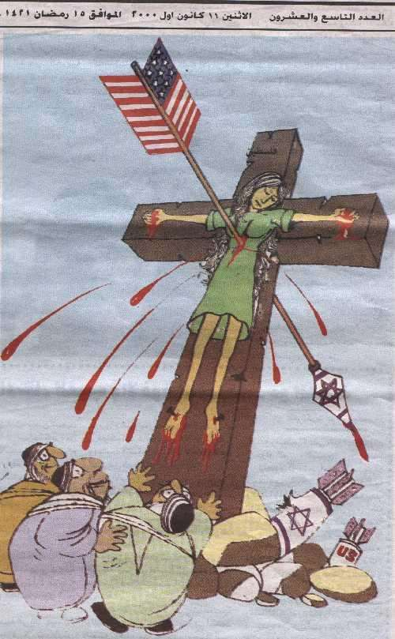

Livre des Actes 5, 34-39: 34 Alors un Pharisien nommé Gamaliel se leva au milieu du Sanhédrin; c'était un docteur de la Loi respecté de tout le peuple. […] 35 [Il] dit aux sanhédrites: « Hommes d'Israël, prenez bien garde à ce que vous allez faire […]. 36 Il y a quelque temps déjà se leva Theudas, qui se disait quelqu'un et qui rallia environ quatre cents hommes. Il fut tué, et tous ceux qui l'avaient suivi se débandèrent, et il n'en resta rien.
37 Après lui, à l'époque du recensement, se leva Judas le Galiléen, qui entraîna du monde à sa suite; il périt, lui aussi, et ceux qui l'avaient suivi furent dispersés. 38 À présent donc, je vous le dis, ne vous occupez pas de ces gens-là [les Apôtres], laissez-les. Car si leur propos ou leur œuvre vient des hommes, il se détruira de lui-même; 39 mais si vraiment il vient de Dieu, vous n'arriverez pas à les détruire. Ne risquez pas de vous trouver en guerre contre Dieu. »
Les 7 chapitres du présent écrit, sont repris, presque à l’identique, de mon premier ouvrage consacré à la question qui est au centre de ma vie et de ma réflexion religieuses des cinq décennies écoulées, à savoir: le mystère du dessein de Dieu sur les deux [peuples] dont [le Christ] a fait un (cf. Ephésiens 2, 14) 1. J’ai mis à profit cette élaboration pour corriger et mettre à jour les liens hypertextes aux travaux auxquels je réfère, qui étaient presque tous périmés, en raison de la disparition brutale des deux sites personnels sur lesquels je les avais regroupés. C’est à juste titre que l’adage dit « A quelque chose malheur est bon ». En effet, c’est à la faveur du temps considérable qu’ont nécessité cette mise à jour (encore en cours), et les efforts épuisants de détection des textes originaux qui avaient subsisté, que m’est venue l’idée de me focaliser que les chapitres de mon ouvrage de 2009, consacrés à l’observation et à l’analyse du développement et des méfaits de l’hostilité anti-israélienne. Au fur et à mesure de la progression de mon inventaire, se faisait jour dans mon esprit le sentiment inquiétant que ce phénomène n’était peut-être pas seulement la conséquence du conflit palestino-israélien, ou l’un de ses aléas socio-politiques et/ou géopolitiques, mais qu’il était révélateur d’un autre mal, beaucoup plus profond, dont les conséquences ne seraient plus seulement extérieures, mais spirituelles 2. C’est ce sentiment que se propose d’exposer le présent témoignage. Si certains lecteurs croient y percevoir ne serait-ce qu’une once d’Esprit Saint, qu’ils se conforment à la recommandation de saint Paul:
Pour les prophètes, qu'il y en ait deux ou trois à parler, et que les autres discernent. (1 Corinthiens 14,29).
VIII.1. L’ÉTAT D’ISRAËL PRESQUE UNIVERSELLEMENT DISCRÉDITÉ ET OBJET DES PIRES CALOMNIES VIII.2. LA «GUERRE PAR LE NARRATIF», NOUVELLE FORME DE NÉGATIONNISME HISTORIQUE ET DE DIABOLISATION POLITIQUE VIII.3. LA « GUERRE PAR LE BOYCOTT »: ISOLER, ASPHYXIER ET DÉSIGNER UN PEUPLE ENTIER À LA VINDICTE INTERNATIONALE VIII.4. LA « GUERRE PAR LE DROIT INTERNATIONAL » INSTRUMENTALISÉ POUR DIABOLISER L’ARMÉE DE DÉFENSE D’ISRAËL VIII.5. « CRITIQUER ISRAËL, CE N’EST PAS DE L’ANTISÉMITISME »: L’ASSERTION RÉSISTE-T-ELLE À L’ÉPREUVE DES FAITS? VIII.6. LES EXCÈS D’UN ‘PHILOPALESTINISME’ CHRÉTIEN « AYANT LES APPARENCES DE LA PIÉTÉ MAIS RENIANT CE QUI EN EST LA FORCE » (2 TIMOTHÉE 3, 5) VIII.7. POUR UN ‘PHILOSIONISME’ CHRÉTIEN EXEMPT DE DÉRIVES SECTAIRES: ÉLÉMENTS DE DISCERNEMENT
Bien que le livre dont sont extraites ces pages soit destiné en priorité à des chrétiens, et que sa visée soit majoritairement spirituelle, la démarche adoptée ici oblige à examiner brièvement l’attitude politique et idéologique, presque universellement hostile, de nombreuses nations envers Israël. Sans entrer dans les détails du conflit communément appelé palestino-israélien et des responsabilités respectives des parties, force est de prendre acte des violentes critiques, voire des condamnations sans appel dont sont l’objet, de toutes parts et même de pays qui se prétendent alliés d’Israël, ce qu’on a coutume d’appeler « la politique » d’Israël – taxée d’ »oppressive », de « discriminatoire », voire de « ségrégationniste » -, et « l’occupation » de territoires que se disputent les deux peuples; l’une et l’autre réputées empêcher les Palestiniens qui y vivent de créer l’État indépendant auquel ils aspirent. Caractériser ainsi la posture d’Israël, et spécialement, sa détermination (« son entêtement criminel », selon ses ennemis), à ne pas renoncer si facilement, en particulier pour des motifs de sécurité, à des pans entiers de son antique patrie, occupés conformément aux lois de la guerre - suite à l’offensive militaire dont il a été l’objet, en 1967, de la part de trois nations arabes voisines – lui vaut la haine de ses ennemis défaits sur le champ de bataille, mais aussi la répulsion consensuelle d’autres nations, pour des raisons idéologiques, dont je dirais, paraphrasant l’apôtre Paul, qu’elles « ont les apparences de la piété, mais renient ce qui en fait la force » (2 Tm 3, 5). Il convient de s’interroger sur les motivations de cette solidarité accusatoire. Nous vivons à une époque de sacralisation du respect des droits de l’homme. En soi, ce n’est pas une mauvaise chose. Le problème est que le traitement réservé aux contrevenants varie grandement selon leur puissance militaire, leur richesse financière, leurs ressources économiques, et même – paramètre de plus en plus dominant dans les dernières décennies -, la menace, militaire et/ou terroriste, qu’ils représentent. Dans cette configuration, ce n’est un mystère pour aucune personne honnête que les droits de l’homme, érigés pour la circonstance en pierre de touche de la moralité humaine et de la respectabilité politique, sont, en fait, instrumentalisés, sous différentes formes pour décrier, voire mettre hors-la-loi tous pays, État, organisation, ou groupe humain, réputés y porter atteinte. En bref, ce qui aurait pu constituer un idéal hautement respectable, est souvent devenu une arme idéologique fatale, braquée sur quiconque est réputé coupable d’avoir enfreint gravement les droits de l’homme et commis des « crimes de guerre ».
Force est de constater, toutefois, qu’il est utopique de prôner l’égalité de traitement des contrevenants, en cette matière comme en d’autres. Dans un passé plus ou moins récent, des nations et des grandes puissances ont violé gravement – et, pour certaines, continuent à le faire – les droits de peuples et de groupes humains divers, perpétré des massacres de masse, déplacé d’énormes masses de populations, spolié et exploité des centaines de millions de gens, sans payer le prix que ses ennemis entendent exiger d’Israël, pour des infractions beaucoup plus bénignes, discutables et sans aucune commune mesure avec l’outrance paranoïde d’actes d’accusation, dont le moins qu’on puisse en dire est que leurs attendus sont outrageusement arbitraires et violent sans vergogne les droits de la défense. En outre, pour peu que les anciens prévaricateurs soient restés, ou devenus « grands et considérés » (La Fontaine), leur position de force les met à l’abri des critiques, même les plus méritées. C’est ainsi que des pays comme la Chine, la Somalie, la Birmanie, le Soudan, la Syrie, l’Iran, la République Démocratique du Congo, pour ne citer qu’une partie de ceux qui ont défrayé la chronique durant des décennies, commettent des exactions de grande magnitude, auprès desquelles celles qu’on reproche à Israël, apparaissent comme minces. Et pourtant, nul ne peut l’ignorer, c’est l’État juif que les nations mettent sur la sellette en permanence, et à propos duquel il semble qu’il n’y ait pas de mots assez violents, d’expressions assez assassines, pour décrier ses actions politiques et surtout militaires. Les deux reproches majeurs adressés à Israël, de manière lancinante, sont d’occuper des terres dont il a spolié les légitimes propriétaires – les Palestiniens -, et de faire, « au prétexte » de se défendre, un usage excessif et barbare de la force à l’encontre d’un peuple pacifique et désarmé. Outre que ces accusations, disproportionnées par rapport à la réalité des faits, ne sont jamais contrebalancées, comme le voudrait l’équité, par l’évocation des attaques et attentats fréquents dont Israël est victime, il n’en faut pas plus pour être traduit au « tribunal des peuples ». Par cette expression, j’entends: tout tribunal national dans le monde, qui se déclare universellement compétent 3 pour instruire des plaintes de cette nature, généralement déposées par des ONG de défense des droits de l’homme, dont la principale activité est la chasse à l’homme israélien, spécialement le militaire, réputé « criminel de guerre », pour le seul fait d’avoir exercé son droit à l’autodéfense, et qui est présumé coupable, sur la foi d’accusations - le plus souvent exorbitantes et impossibles à vérifier, et considérées comme indiscutables parce que portées par des témoins considérés comme des ‘victimes’, statut qui interdit à quiconque de mettre en doute leur parole. La campagne de dénigrement d’Israël et de calomnies tous azimuts à son encontre, en cours depuis quelques années, a atteint son apogée depuis l’offensive de l’armée israélienne à Gaza 4; elle vise à mettre l’État juif au ban de l’humanité. Le philosophe juif, Shmuel Trigano, a donné à ce phénomène le nom fort pertinent de « pogrom médiatique ». Il écrit 5:
Nous touchons là à l’essence de la violence perpétrée sur la personne d’Israël. Elle est vertueuse! Plus le souci des « enfants » et des « civils » est « disproportionné », plus fort et radical est le coup (symbolique) porté. Plus Israël est stigmatisé et diabolisé, our des motifs humanitaires! Le coup est ainsi moral et « clean », car il frappe « à côté ». L’iconisation quasi religieuse des enfants-victimes vise à la déshumanisation des Juifs. Les téléspectateurs savent tout de telle ou telle famille palestinienne, dont on leur raconte l’histoire humaine, très humaine. Ils savent tout des blessés, des enfants. Mais rien des individus israéliens, de leurs enfants, de leurs femmes, de leurs blessés. On ne voit sur les écrans que des tanks, des soldats, une armée. La société israélienne n’existe pas dans le regard des médias.
De plus, une nouvelle offensive, redoutable par ses répercussions, est menée contre Israël: l’utilisation du droit comme arme de guerre 6. Avant d’y revenir plus en détail, dans un chapitre spécifique, en voici une brève présentation.
L’ancien général américain et juge militaire, Charles Dunlap, en a nommé le résultat lawfare: « utilisation du droit comme arme de guerre ». Dunlap entendait par là montrer essentiellement comment des acteurs non étatiques, plus faibles, cherchaient à bénéficier d’un avantage moral en déclarant que des crimes de guerre ont été commis par l’armée d’État, plus puissante; mais l’État peut, lui aussi, recourir à l’offensive par le Droit (lawfare).
Comme dit plus haut, ce type d’action est surtout le fait de personnes privées agissant principalement au sein de Think Tanks (laboratoires d’idées) et d’Organisations Non Gouvernementales (ONG), et ayant des buts et des ordres du jour idéologiques et/ou politiques, le plus souvent anti-israéliens 7. À l’inverse des lobbies, qui ciblent majoritairement les décideurs, les ONG s’adressent à ce qu’il est convenu d’appeler la « société civile » (pour la distinguer des instances de l’État). Elles agissent surtout par la publication d’études, de rapports et d’articles, généralement rédigés par des spécialistes du sujet traité, et intelligemment diffusés parmi l’élite intellectuelle et politique, avec des « viviers » particulièrement réceptifs, tels les membres de l’Union Européenne et d’autres institutions. Certaines ont des budgets conséquents, parfois obtenus de l’Union Européenne. Et, bien entendu, elles ont pour vitrine un ou plusieurs sites Web, toujours remarquablement bien tenus, voire attractifs.
Incapables, jusqu’ici, de vaincre Israël sur le champ de bataille, ou de le démoraliser par le terrorisme le plus barbare, les dirigeants arabes et palestiniens ont de plus en plus recours aux vieilles méthodes soviétiques de déstabilisation et d’intoxication des esprits. Le but recherché est de subvertir l’opinion publique en rendant l’adversaire odieux. On le pousse à la faute, en l’exaspérant par un harcèlement incessant sur tous les fronts: politique, diplomatique, juridique, médiatique. Confrontés à un peuple dont l’histoire ancienne, incontestable et massivement documentée, se déroula sur les lieux même qu’on lui dispute aujourd’hui, et qui ne cessa jamais, au fil des siècles, de témoigner, dans sa littérature sacrée et profane, et dans ses prières, d’un attachement indéfectible à cette terre, et d’exprimer sa nostalgie d’y revenir un jour, ses opposants arabes étaient conscients qu’il leur faudrait déployer une énorme énergie et recourir à tous les moyens, fût-ce les plus violents et les plus déloyaux, pour inverser la tendance qui fut longtemps favorable aux pionniers juifs d’abord, puis à l’État d’Israël, jusqu’au désamour, initié en 1967 par le Général de Gaulle, et qui n’a fait que s’aggraver depuis, au point de confiner à la haine. Ils n’ont épargné aucun effort, ni reculé devant aucun moyen pour parvenir à leurs fins. Profitant du désenchantement éprouvé par les nations européennes à l’égard de la petite nation qui les avait tant impressionnées, à ses débuts, par son courage et ses prouesses militaires, économiques, sociales et technologiques, et dont, au fil des décennies, ils ne comprenaient plus, et même réprouvaient l’énergique attitude d’autodéfense, les pays arabes et, plus récemment, les dirigeants palestiniens ont entrepris de discréditer définitivement l’État juif et de l’isoler de ses anciens alliés, espérant qu’il lui arrive ce qui s’est produit en Afrique du Sud, où la minorité blanche, lâchée par toutes les nations, ou presque, a dû se résoudre à céder le pouvoir à la majorité noire. Malgré l’inadéquation criante du parallèle, c’est ce modèle qu’à la suite d’une propagande acharnée, presque universellement relayée par les manipulateurs du ‘culte’ des droits de l’homme, les ennemis d’Israël sont parvenus à agiter, tel un chiffon rouge devant un taureau en rage, au nez d’une opinion publique mal informée et incapable de comprendre la complexité du monde et de la mentalité arabo-musulmans, en général, et, en particulier, la situation géopolitique précaire d’un Israël en danger existentiel depuis sa naissance, cerné qu’il est par ses ennemis sur le mouchoir de poche territorial qui lui sert de patrie sans frontières reconnues. Dans leur volonté farouche de dénier aux juifs tout titre historique à une quelconque souveraineté sur la moindre parcelle du territoire, appelé par eux ‘Palestine’, les idéologues et dirigeants palestiniens, arabes et musulmans, n’ont de cesse de nier les évidences historiques les plus indiscutables, quand elles sont favorables aux juifs, et de réécrire l’histoire pour la faire cadrer avec leur version nationaliste et en persuader le monde. Selon le Professeur G.M. Steinberg, c’est une véritable guerre consistant, pour les Palestiniens, à ressasser inlassablement un « narratif » - ou vision révisée et idéalisée de l’histoire, avantageuse pour le peuple qui s’en prévaut - présentant ce peuple comme une victime, dépossédée de sa patrie ‘historique’, érigée en paradigme d’une criante injustice géopolitique infligée, au mépris du droit international, par un « occupant » disposant d’un armement sophistiqué – narratif ruineux pour la réputation du peuple israélien 8. Il s’agit d’une reconstruction mémorielle ayant pour but d’accréditer une version des événements, favorable à la cause qui inspire cette réécriture de l’histoire, et qui discrédite par tous les moyens la version de l’adversaire. Dans cette configuration idéologique, les faits sont sujets à une réinterprétation qui n’est souvent qu’une falsification grossière.
C’est le cas en particulier du lien établi, d’autorité, par le narratif palestinien, entre la création de l’État d’Israël et la Shoah. L’historien Georges Bensoussan en a fait magistralement justice. « L’horreur de la Shoah a-t-elle joué un rôle dans le vote de l’ONU du 29 novembre 1947 en faveur du partage de la Palestine? », se demande le présentateur de l’ouvrage de Bensoussan 9. Il répond par le substantiel exposé suivant:
Bien des observateurs considèrent que ce vote a été dicté par la compassion des nations pour les persécutions subies par le peuple juif. Cela n’est pas prouvé: Georges Bensoussan rappelle l’abstention de la Grande Bretagne et le fait qu’aucune des nations participant au vote ne se sentait responsable des crimes nazis. Et de citer l’historien: « Toute chronologie est jugement. Se limiter aux années 1945-1948 pour comprendre la naissance de l’État d’Israël, c’est établir entre le génocide et la refondation de l’État juif un lien de causalité qui semble aller de soi. » C’est en ces termes que l’auteur nous invite à prendre la question plus en amont, avant 1940, à une période où le Yichouv [population juive de l’époque du Mandat britannique] avait déjà créé l’essentiel des infrastructures du futur État, une administration, une industrie, une agriculture en plein essor et une armée organisée qui a pu triompher de la coalition arabe en 1948. [Selon Bensoussan], si la Shoah a pu accélérer la naissance de l’État juif, elle l’a privé de ses réserves démographiques: perte immense, coup presque mortel pour le sionisme. Et l’on est amené à évoquer ce qu’aurait pu être un État d’Israël renforcé par le soutien des communautés disparues, les descendants des six millions de juifs assassinés entre 1941 et 1945. Pour Georges Bensoussan, en définitive, la destruction des juifs d’Europe a failli compromettre la naissance d’Israël et encore aujourd’hui ses effets négatifs sur l’État juif persistent: « La Shoah ne crée pas l’État d’Israël, elle en parasite la naissance, au contraire, et l’existence et le sens, jusqu’à aujourd’hui encore.
De son côté, le Professeur Gerald M. Steinberg, déjà cité, s’intéresse surtout à la genèse et aux motivations idéologiques de la « guerre par le narratif ». Il fournit plusieurs exemples des stéréotypes mensongers véhiculés par le « narratif » palestinien 10:
Suite à l’échec de l’invasion de 1948, qui avait pour but de détruire l’État juif naissant, les dirigeants arabes se lancèrent dans une tentative massive de réécriture des événements. Le processus se renouvela en 1967, quand les initiatives du président égyptien Gamal Abdel Nasser pour effacer Israël de la carte furent transformées en une « guerre contre l’occupation ». En ressassant les mythes et les slogans un nombre suffisant de fois, et à l’aide de la richesse pétrolière, de l’intimidation et du terrorisme, cette stratégie a progressivement réussi. La guerre par le narratif… commence par la falsification de l’histoire couvrant la période du Mandat, depuis la Déclaration Balfour jusqu’au Plan de partition de 1947. Cette version dépeint Israël comme un « projet de colonisation » juive, imposé aux Arabes par l’antisémitisme européen et la culpabilité de l’Holocauste… Le violent rejet arabe de la proposition de « deux États pour deux peuples », et le refus continuel d’accepter un État juif, quelles qu’en soient les frontières, disparaissent de ces histoires. Dans ce narratif, les Palestiniens sont toujours, par définition, d’innocentes victimes, et Israël est décrit comme un agresseur puissant et manipulateur. Les réfugiés des guerres déclenchées par les Arabes sont devenus l’objet d’une sympathie mondiale, garantie par un système de soutien international avec d’énormes budgets qui renforcent le récit. L’agence de Secours et de Travaux des Nations Unies [en anglais, UNRWA], qui « commémore ses 60 années » d’existence, garantit la perpétuation de la haine. Par contre, le nombre – presque égal [à celui des réfugiés palestiniens] – des réfugiés juifs qui ont fui les attaques arabes, a disparu des livres d’histoire: les réfugiés juifs ne cadrent pas avec le narratif [palestinien]. A Jérusalem, la guerre par le narratif a adopté la version arabe, qui élimine 3 000 ans d’histoire juive, ainsi que l’occupation et les profanations [arabes] systématiques de la période 1948- 1967. L’Union Européenne alloue de grosses sommes d’argent à des organisations comme Ir Amim et B’Tselem, qui élaborent leurs rapports tendancieux, lesquels sont reproduits et publiés par la Commission Européenne pour encourager la diabolisation d’Israël. La guerre par le narratif est responsable des campagnes de boycott à l’encontre des universités israéliennes, d’une campagne immorale d’Amnesty International pour empêcher Israël d’obtenir des armes nécessaires à sa défense, et des cas de « guerre juridique » qui profitent des systèmes judiciaires d’Espagne, de Grande-Bretagne et d’ailleurs, pour renforcer les images de la victimisation palestinienne et des crimes de guerre israéliens… [Le] rôle essentiel [des] guerres par le narratif… est de ruiner la légitimité de la souveraineté nationale juive. Sur ce front, les armes principales sont la rhétorique des droits civiques et les images d’Afro- Américains, ainsi que de Sud-Africains noirs qui ont été victimes des cruautés de la ségrégation. Mais les analogies avec ces situations sont totalement rétrogrades; en réalité, ce sont les Palestiniens qui nient et s’efforcent de détruire l’autodétermination juive. Les ONG financées par l’Europe, de même que les donateurs, bien intentionnés mais médiocrement informés, du New Israel Fund, sont particulièrement actifs sur ce front de la diabolisation d’Israël.
Le boycott n’est pas une invention récente, il remonte à la fin du XVIIIe s. 11. D’entrée de jeu, il convient de préciser que le seul boycott légal est celui qui est décrété par un État souverain. Il s’agit d’une mesure ou d’une série de mesures coercitives, tels des embargos sur certains matériels, produits, ou services. Leur but est de faire pression sur des États qui ne respectent pas les règles internationales édictées par des organes habilités à les édicter, telle l’Organisation des Nations Unies, pour les amener à composition. Le plus célèbre et le plus long est celui qui a frappé l’Afrique du Sud pour contraindre ses autorités politiques à mettre un terme à leur politique de ségrégation raciale (apartheid), à l’encontre de la population noire du pays 12. Mais quoique cette arme soit uniquement du ressort des États, elle est de plus en plus préconisée et pratiquement imposée par des groupes non étatiques, particulièrement des ONG. La justification de cette démarche consistant à se faire justice soi-même, aux dépens des lois internationales est clairement explicitée par Omar Bargouthi, frère du terroriste condamné à la prison à vie en Israël, pour attentats meurtriers contre des civils 13:
« …puisque la communauté internationale n’a pas été capable de demander des comptes à Israël sur ses violations de la loi internationale et des droits de l’homme, nous appelons la société civile internationale à prendre ses responsabilités pour qu’elle montre sa responsabilité morale, pour qu’elle demande des comptes à Israël en mettant en œuvre le Boycott, le Désinvestissement et les Sanctions. »
Le boycott dont il est traité brièvement dans cette section est celui dont est l’objet l’État d’Israël, en raison du conflit israélo-palestinien. Plus connu sous le sigle de BDS (Boycott, Désinvestissement, Sanctions), forgé par les ONG pro- palestiniennes 14, le boycott dirigé contre l’État juif est si important et si répandu dans le monde que l’encyclopédie électronique Wikipédia lui consacre un article spécifique 15. Avant le boycott d’Israël, il y a eu celui du sionisme, antérieur même à la création de l’État juif. La Ligue arabe a alors mis en œuvre le boycott formel du sionisme, dès le 2 décembre 1945, puis celui d’Israël. Le boycott est également imposé par diverses fatwas islamistes. Entre 2002 et 2004, la « société civile » palestinienne appelle au boycott, au désinvestissement et aux sanctions (BDS). Le coup d’envoi en est donné en 2005, à l’occasion de l’anniversaire de l’avis de la Cour Internationale de Justice, rendu à l’encontre de la Barrière de séparation israélienne, ou de sécurité (improprement appelée « Mur » par ses détracteurs, voire « Mur de la Honte » ou d’ »Apartheid »), sur laquelle je m’attarderai plus loin. Cet appel sera repris dans diverses rencontres internationales et notamment par le « Comité des Nations unies pour l’exercice des droits inaliénables du peuple palestinien ». Ci-après, différents types de boycott infligés à Israël.
Des consommateurs de divers pays se sont unis pour boycotter certaines sociétés, dont, par exemple, Starbucks ou Coca Cola, ou, plus récemment, L’Oréal. En décembre 2008, le Comité BDS appelle au boycott de cette société, en raison de ses « relations d’affaires avec Israël ».
En 2002, Desmond Tutu, prix Nobel de la paix pour sa lutte contre l’apartheid, lance une campagne de désinvestissement d’Israël[7], conduite par des entités religieuses et politiques, pour mettre fin à l’occupation israélienne des territoires palestiniens conquis lors de l’opération militaire de 1967. Cet appel sera suivi par le « Comité pour l’exercice des droits inaliénables du peuple palestinien » et la société civile palestinienne, avec son appel au boycott, désinvestissement et sanctions, qui n’est pas sans effet 16.
Boycott académique 17
L’idée d’une campagne européenne de boycott universitaire et culturel est née en Grande-Bretagne, au printemps de l’année 2002, et a été lancée dans une lettre ouverte signée par 125 universitaires et publiée par The Guardian. Les signataires suggéraient d’appeler à un « moratoire », au niveau national et européen, jusqu’à ce qu’Israël se conforme aux résolutions des Nations unies et entame des négociations de paix sérieuses avec les Palestiniens, selon les schémas élaborés dans plusieurs plans de paix, y compris celui que soutiennent les Saoudiens et la Ligue Arabe 18. Cette lettre conduisit Mona Baker, de l’Université de Manchester, à révoquer deux universitaires israéliens, en juin 2002. En réponse à la critique du Premier ministre d’alors, Tony Blair, Mona Baker donna une interview au Daily Telegraph, ce qui lui valut 700 signatures d’approbation, dont celles de dix universitaires israéliens, ainsi que d’universitaires britanniques, canadiens, américains, ou libanais.
En réalité, affirmait-elle, je ne boycotte pas les Israéliens, je boycotte les institutions israéliennes. Je suis convaincue que, comme ce fut le cas pour l’Holocauste 19, longtemps après que tout cela sera fini, les gens admettront qu’ils auraient dû faire quelque chose, que c’était déplorable, et que l’université avait fait preuve de lâcheté en n’agissant pas de la sorte.
A tout cela il faut encore ajouter, sans entrer dans le détail de leurs modalités – ce qui nous entraînerait trop loin et allongerait démesurément ce chapitre -, les boycotts diplomatique, politique, culturel, et, depuis peu, syndical, et militaire. Il convient de noter un phénomène qui, me semble-t-il, n’a pas suffisamment retenu l’attention des analystes politiques, des juristes, des responsables politiques, ni même – ce qui est plus étonnant – des intellectuels et responsables communautaires juifs dans le monde. Je veux parler du fait que ces mesures de rétorsion – que l’on peut qualifier de « sauvages », et qui sont, en tout état de cause, illégales au regard des lois qui régissent la liberté du commerce et de la consommation, sont préconisées, par la puissante mouvance à laquelle on donne de plus en plus, aussi systématiquement qu’abusivement, le nom de « société civile », et mises en œuvre par ses « militants » autoproclamés. Il s’agit, en fait, d’ONG extrêmement politisées, dont l’agressivité militante et la partialité n’ont d’égales, dans de nombreux cas, que l’ignorance, souvent abyssale, des situations complexes à propos desquelles ces organisations et d’autres similaires prononcent présomptueusement des jugements sans appel, et l’hostilité pathologique dont elles font preuve envers l’État d’Israël et son armée de défense. Je reviendrai, plus loin, sur ce dernier point. A ce stade, je me limite à signaler l’angoisse, voire la détresse, que suscite, chez les juifs, tant en Israël qu’en diaspora, cette hostilité quasi universelle, d’autant qu’elle a pour paradigme – mensonger mais extrêmement mobilisateur de l’opinion publique – la discrimination (apartheid), attitude universellement honnie, de nos jours 20.
On n’entrera pas ici dans les détails des guerres conventionnelles gagnées par Israël: Guerre d’Indépendance (1948-1949); Campagne du Sinaï (1956); Guerre des Six- Jours (1967), Guerre du Kippour (1973); ni dans ceux des opérations militaires plus restreintes (Opérations au Liban, en 1982 et 2006, et à Gaza, fin 2008-début 2009); ni enfin dans ceux des deux Intifadas (insurrections) de 1987 et 2000. Si les guerres conventionnelles évoquées n’ont pas valu à Israël d’avanies judiciaires sérieuses, il en a été tout autrement pour les opérations militaires subséquentes au Liban, suite au massacre de Sabra et Shatila qui, bien que perpétré par les Phalanges chrétiennes, a valu à Ariel Sharon plusieurs tentatives d’inculpation pour crime de guerre 21. Et même des interventions militaires de répression de soulèvements armés, relativement limitées, dans les Territoires palestiniens, par exemple, à Jénine, en 2002, ont donné lieu à de graves accusations de massacres et de crimes contre l’humanité 22. Sans faire le panégyrique de l’armée israélienne, plus connue sous son sigle familier de Tsahal (Tsva Haganah Leyisrael: Armée de Défense d’Israël), les spécialistes de la chose militaire qui ne sont pas aveuglés par les préjugés s’accordent à reconnaître que cette armée populaire fait preuve d’un professionnalisme et d’une éthique exemplaires. Ce qui ne veut pas dire qu’aucun comportement répréhensible n’existe en son sein, mais, contrairement à ce que disent les ennemis irréductibles d’Israël, les attitudes déviantes sont sévèrement réprimées et punies. L’opération militaire contre Gaza a illustré ces qualités. Exceptionnelle à plus d’un titre, par sa violence, sa complexité, l’affrontement avec un ennemi sans respect pour les lois de la guerre – qui n’hésite pas à prendre les civils comme boucliers humains, et tente par tous les moyens de pousser son adversaire à la faute, en lui tendant des pièges et en combattant en zone habitée, pour provoquer un maximum de pertes de vies innocentes dans la population – cette opération militaire, mondialement décriée, a mis en exergue la moralité foncière du comportement de l’armée israélienne et son souci exceptionnel de la sécurité des civils. Dans le déchaînement universel des médias et des ONG pro-palestiniens, une seule voix militaire non juive s’est élevée pour rendre justice à l’éthique militaire israélienne. Ancien colonel dans l’infanterie britannique, cet officier sait de quoi il parle. Le portrait saisissant qu’il brosse des conditions concrètes du combat, et l’empathie dont il fait preuve pour celui qu’ont mené les officiers et les soldats de Tsahal en zone urbaine, affrontant un ennemi félon et cynique qui s’abrite derrière les populations civiles et manipule la presse en se plaignant d’être victime de prétendus crimes de guerre, restera classique. En témoigne cet extrait 23: « Il y a un autre problème que rencontre Tsahal et auquel les [soldats] Britanniques n’ont pas à faire face avec la même virulence. Il s’agit du préjugé automatique, pavlovien, qu’ont en commun beaucoup de médias du monde entier ainsi que de nombreuses organisations des droits de l’homme, selon lequel Tsahal a nécessairement tort et viole les droits de l’homme. Examinons un peu les efforts de Tsahal à Gaza pour respecter les lois de la guerre. A chaque fois que c’était possible, Tsahal donnait à la population au moins quatre heures pour partir avant l’attaque d’un lieu ciblé. Les pilotes des hélicoptères d’assaut, qui avaient pour tâche de détruire les rampes de lancement mobiles du Hamas, avaient totale discrétion pour ne pas procéder à une frappe si elle présentait trop de risques de pertes civiles. De nombreuses missions qui auraient pu toucher les capacités militaires du Hamas ont été annulées à cause de cela. Durant le conflit, Tsahal a permis l’entrée à Gaza d’une énorme quantité d’aide humanitaire. Ce genre de tâche est considéré par les tacticiens militaires comme risqué et dangereux, même dans de bonnes conditions. Mettre en place des opérations qui apportent de l’aide dans les mains mêmes de l’ennemi est normalement totalement impensable pour un tacticien militaire. Tsahal a pourtant pris ces risques.
Dans les dernières phases de l’opération « Plomb Fondu », Tsahal a unilatéralement annoncé un cessez-le-feu quotidien de trois heures. Tsahal a envoyé plus de 900 000 tracts prévenant la population des attaques, afin que les civils puissent quitter les zones concernées. Une escadrille entière a été mobilisée pour cette tâche. Ces tracts demandaient également à la population de téléphoner pour donner des informations sur les combattants du Hamas pour permettre d’épargner des vies innocentes. Tsahal a averti par téléphone plus de 30 000 foyers palestiniens pour les prévenir, en arabe, de quitter les endroits où le Hamas avait pu cacher des armes, ou avait l’intention de livrer des combats. Les mêmes messages en arabe ont été diffusés à la radio israélienne pour prévenir la population des opérations en cours. Malgré ces mesures exceptionnelles initiées par Israël, des civils innocents ont été tués ou blessés. C’est, bien sûr, le fait des conditions propres au combat dont j’ai parlé, mais surtout, ces pertes sont l’inévitable conséquence des tactiques de combat du Hamas. Par ces actions et bien d’autres mesures importantes prises durant l’opération Plomb Fondu, Tsahal fait plus qu’aucune autre armée dans l’histoire de la guerre, pour sauvegarder les droits des civils dans une zone de combat. » Nous vivons à une époque très différente de celle où ont été rédigées les règles du droit international et celles de la guerre 24. Sans aller jusqu’à parler d’une indifférence aux atteintes aux droits élémentaires des personnes, surtout en période de conflits, le souci qu’on en avait, au début du XXe siècle, et même au-delà, était très loin d’atteindre l’importance extrême accordée, de nos jours, au droit humanitaire, plus couramment dénommé « droits de l’homme » 25. En soi, rien là que de très éthique, si ce n’est qu’au fil des ans et sous les coups de boutoir de l’esprit partisan, surtout pro-palestinien, les droits de l’homme sont devenus une espèce de religion laïque confinant à une néo-Inquisition au jugement de laquelle il ne fait pas bon d’être confronté. Les excès auxquels a donné lieu ce véritable « culte », ont d’ailleurs fini par lui valoir le sobriquet sarcastique et polémique de « droit-de-l’hommisme ».
Mais ce qui caractérise la forme partisane et accusatrice de zèle pour le droit humanitaire – « opposable », en quelque sorte, à l’État d’Israël, pour sa gestion estimée discriminatoire voire pire, par ses ennemis, de la « question palestinienne » -, c’est le manteau de moralité dont elle se drape. Parmi les penseurs qui ont le mieux analysé cette caricature de la justice et de l’altruisme, le philosophe Shmuel Trigano, mérite une place de choix. Je cite ici un extrait de la présentation d’un de ses ouvrages 26:
Ce sont de vertueux esprits qui font entre eux assaut d’éthique pour fustiger le « péché ori- ginel » d’Israël et les tares des communautés juives. C’est tout à fait nouveau sur le plan historique, car l’inimitié envers les Juifs se justifiait autrefois, certes, en termes moraux mais ceux-ci épousaient la doctrine ou l’idéologie alors dominantes. Aujourd’hui, ce sont les arguments de la morale démocratique ou de la morale tout court, non entachés d’idéologie, qui sont invoqués pour condamner et délégitimer le sionisme, l’État d’Israël ou la communauté juive. Ils sont au fond en accord avec l’étrange idéologie dominante de notre temps: le droit-de-l’hommisme. Son étrangeté découle de ce que les valeurs démocratiques ont été instrumentalisées pour servir les intérêts de pouvoir et d’influence de ceux, affairistes politiques individuels ou groupes (minoritaires), qui les invoquent. Les valeurs se sont vues idéologifiées [sic] sans être recouvertes de concepts. C’est une idéologie qui semble vide et creuse. Les acteurs politiques qui s’en recommandent poussent donc leurs pions au nom de la morale la plus pure. C’est sans doute une situation nouvelle. La morale y est irrémédiablement corrompue car les méfaits se commettent en son nom, sans même une mise en scène idéologique. C’est ce qui explique pourquoi la figure du Juif, si elle est dépeinte négativement, l’est en fonction de valeurs morales, ce qui n’attente pas formellement et immédiatement à son essence directement. Ce n’est pas parce que la condition juive est en elle-même mauvaise – quoique la délégitimation d’Israël, du fait de son « péché originel » (l’« injustice » faite aux Palestiniens) l’implique -, c’est parce que les Juifs transgressent les valeurs les plus sacrées de la morale qui a survécu aux turpitudes meurtrières du XXe siècle. Le nouvel antisémitisme peut donc bien s’accompagner d’une quelconque célébration des Juifs ou plutôt de certains Juifs, d’une certaine figure des Juifs. Pas de « Juif Suss », de « déicide », de falsificateurs de la parole divine, etc… – moralité oblige – mais la compassion pour les victimes de la Shoah, devenue le sésame-ouvre-toi de la bonne conscience… »
Dans ces conditions, il n’est pas étonnant que ce soient les forces de l’ordre (armée et police) – auxquelles la loi confère le droit d’utiliser la force – qui concentrent sur elles l’essentiel de la critique et de la réprobation internationales. Le nombre de méfaits, majoritairement imaginaires, qu’on leur attribue est incroyable; la nature des accusations qu’elles essuient est le plus souvent exorbitante, la vedette étant tenue par celle qu’on lit ou entend à satiété: « crime de guerre » 27. A lui seul, ce thème mériterait une étude monographique. Rappelons que, pour qu’un comportement militaire soit qualifié de « crime de guerre », au sens pénal du terme, il faut qu’il ait été volontaire, prémédité, commis avec une intention délibérée (quels qu’en soient le motif ou la justification). Alors que, dans leur quasi-totalité, les prétendus « crimes », imputés à Israël, ne sont, en fait, que des « bavures », ou, comme on dit en langage technique, des « dommages collatéraux », causés accidentellement et sans intention de nuire. Or, toutes les actions offensives et défensives de l’armée israélienne sont décrétées « brutales » et « disproportionnées ». En outre, étant donné l’extrême médiatisation de notre société, en général, et du conflit israélo-palestinien, en particulier, le procès qu’on intente à Israël est public et s’apparente souvent plus à un lynchage qu’à une critique digne de ce nom. Et même s’il est patent qu’il n’a aucune valeur juridique ni pénale, il n’en cause pas moins des dégâts irréversibles à l’image de l’État d’Israël et de son armée de défense, outre que, à l’instar de ce qui s’est produit dans les années 30, en Allemagne, il reste toujours quelque chose des calomnies incessantes émises à l’encontre d’une partie spécifique de l’espèce humaine, et on sait à quelles horreurs ont mené ces campagnes.
Il va sans dire que les dénégations et les explications de l’armée et du pouvoir politique israéliens, même étayées de preuves indéniables, ne sont pratiquement jamais considérées comme crédibles. A l’inverse, les récits des « témoins », et les « rapports » des ONG pro-palestiniennes, si sujets à caution soient-ils, sont valorisés de manière excessive, et souvent même élevés au rang de preuves « indéniables », voire « accablantes ». Ils sont d’ailleurs avidement « avalés » par la presse internationale, et leur diffusion – qui s’apparente à un matraquage, voire à un lavage de cerveaux – est pour beaucoup dans la détérioration de la réputation d’Israël, ainsi que dans l’affaiblissement de sa posture morale et de sa crédibilité dans les instances internationales. Rares sont les courageux qui osent ramer à contre-courant 28. Quels que soient les torts réels éventuels de cet État si calomnié, y compris par une instance internationale, dont le rôle est précisément de flétrir une telle injustice 29, la diabolisation indéniable dont il est l’objet, au point de le pousser à la paranoïa 30, devrait poser question aux consciences droites, surtout les chrétiennes, dont on n’entend, hélas, que fort peu la voix. Je reviendrai sur ce point important, dans ma Conclusion.
C’est un lieu commun du discours public et médiatique que d’insister sur la distinction entre critique d’Israël, en tant qu’État, et antisémitisme. C’est même un argument considéré comme indiscutable, et auquel recourent volontiers ceux et celles qui ont un discours virulent à l’égard de l’État juif, et se plaignent des réactions, souvent écorchées vives, et de l’accusation d’antisémitisme dont ils sont l’objet. Posons en principe, d’entrée de jeu, que toute critique d’Israël ne peut être taxée d’antisémitisme, pour peu qu’elle soit exprimée sans excès ni parti pris. Ce n’est donc pas de ce type de critique qu’il est question dans ce chapitre, mais de celles où s’expriment, à l’évidence, une partialité idéologique, voire une hargne, qui trahissent une hostilité de principe à tout ce que dit, fait, voire est Israël, et qui heurte les convictions politiques, sociologiques et humanitaires et la conception du monde de ses ennemis. Quiconque a été personnellement en butte à la contradiction, à la critique, voire à l’inimitié, peut comprendre l’état d’âme de celui ou celle qui défend une cause, en toute sincérité, et se trouve confronté au déchaînement de violence verbale de certains interlocuteurs. La plupart du temps, il ne peut prouver la mauvaise foi de ses contradicteurs, mais il la perçoit toujours intuitivement, parfois même avec une acuité qui, s’il n’est pas psychiquement solide, peut le déstabiliser ou l’affecter grandement. Dans ce genre d’affrontements – que je qualifie d’ »idéologiques », au sens large du terme -, nulle place pour la rationalité. Il ne s’agit pas d’un échange de vues – courtois, même si exigeant, entre gens bien élevés et honnêtes qui savent reconnaître la part de vérité que recèlent les convictions de leur interlocuteur -, mais d’une confrontation frontale, d’un échange de tirs, en quelque sorte, dans lequel les munitions, si elles ne tuent pas, blessent l’âme et sèment la zizanie, voire la haine. Conscients du fait que s’en prendre directement aux juifs en tant que tels est aujourd’hui « politiquement incorrect » dans les démocraties, les « nouveaux judéophobes », comme les appellent certains spécialistes 31, se manifestent rarement à visage découvert, mais s’avancent travestis, comme on l’a dit avec bonheur, sous l’ »habit neuf » de l’antisionisme, encore qualifié de « faux nez » de l’antisémitisme. Selon le recenseur du livre de P.-A. Taguieff, l’un des spécialistes qui ont le mieux analysé ce nouvel antisémitisme 32,
Le Juif, désormais désémitisé, appartiendrait en effet, sous l’influence d’une propagande antisioniste tout particulièrement virulente, d’abord et avant tout à l’Occident, et pas n’importe lequel: « raciste », « impérialiste » et « colonialiste ». Profitant d’un consensus antiraciste international, où domine une idéologie « anti- raciste » hostile par principe à la nation, les « nouveaux judéophobes » auraient cristallisé l’amalgame entre le « sionisme » et l’Occident chrétien, incarné par les États-Unis. Les militants de l’islamisme radical – ennemis déclarés d’Israël – seraient, selon Taguieff, les nouveaux relais de la judéophobie. Cette passion serait doublement entretenue: par une interprétation fondamentaliste du Coran, d’une part, ainsi que par la complicité rhétorique avec le discours « progressiste » de l’intelligentsia de gauche, sensible à l’argumentaire « anti-raciste » et « anti- impérialiste » de la cause palestinienne. ».
Le même critique précise:
Taguieff qualifie cet « antisionisme » de « radical » pour mieux mettre l’accent sur « l’absence de toutes conditions, de toutes limites et de toute mesure de la haine portée à Israël, en tant qu’État-nation dans lequel s’est réalisé le projet sioniste ». Procédant d’une vulgate anti-israélienne mise au point par la propagande soviétique et arabo-musulmane dans les années 1950 et 1960, la grande vague de judéophobie planétaire actuellement observable aurait trouvé sa forme radicale lors de la guerre des Six-Jours (juin 1967), quand l’existence même d’Israël était déniée sous prétexte de « bellicisme », « d’impérialisme » et de « nazisme ». Aujourd’hui, des hautes instances de certaines dictatures du Proche-Orient expriment cet antisionisme radical en proclamant ouvertement leur haine d’Israël. Cette haine pour Israël se confond avec une haine des Juifs en ce qu’elle puise sa source paranoïde dans une réactivation des anciens schémas de diabolisation antisémites: le Juif, représenté sous les traits d’un agent pathogène et infectieux, se voit réduit à la condition d’une sous-humanité virale.
Et de fait, les choses en sont venues au point qu’à force de s’en prendre au sionisme, diffamé comme fasciste, impérialiste, colonialiste, et même raciste, les judéophobes ont fait du terme « sioniste » comme la quintessence de tous les péchés abhorrés par la nouvelle « religion » des droits de l’homme. Rappelons ce que recouvrent les termes « sionisme » et « antisionisme », en nous limitant ici aux définitions simples qu’en donne l’encyclopédie populaire Wikipedia 33: Le sionisme est une idéologie politique nationaliste prônant l’existence d’un centre spirituel, territorial ou étatique peuplé par les juifs, en général à l’intérieur des limites de la Palestine. Sur un plan idéologique et institutionnel, le sionisme entend œuvrer à redonner aux Juifs un statut perdu depuis l’Antiquité, à savoir celui d’un peuple regroupé au sein d’un même État. L’antisionisme (ou anti-sionisme) désigne l’opposition au sionisme et, par extension, l’hostilité à la création, puis au maintien de l’État d’Israël en tant qu’État juif pour diverses raisons, tant idéologiques que politiques, morales, ou religieuses. L’antisionisme peut également désigner l’opposition à la politique d’Israël par ceux qui la jugent colonialiste. Rappelons un exemple de discernement célèbre – car émanant d’un militant des droits civiques héroïque, mort assassiné, Martin Luther King -, entre critique d’Israël et antisémitisme 34:
Durant une intervention à l’Université de Harvard, peu de temps avant sa mort, un étudiant se leva pour interroger King sur le problème du sionisme. La question était à l’évidence hostile. King répondit: « Quand des gens critiquent les sionistes, ils veulent parler des Juifs. Votre propos est de l’antisémitisme. »
On fera bien de tenir compte aussi, en la matière, du jugement suivant 35:
Finalement, la distinction à faire n’est pas entre l’antisémitisme et l’antisionisme, mais entre l’antisémitisme et l’anti-israélisme. Israël, comme tout État, est soumis à la critique. On a le droit de ne pas aimer son comportement, ses objectifs, sa culture. On peut être opposé à sa politique, regretter ses choix stratégiques, ses actions militaires, son refus de faire des concessions, ou au contraire sa trop grande propension à en faire. On peut ne pas aimer l’idéologie de tel ou tel parti qui compose la coalition gouvernementale. L’hostilité envers l’État d’Israël, ses institutions et ses représentants officiels – mais pas ses simples citoyens -, pour des raisons aussi justifiées que ridiculement bêtes, est parfaitement légitime, tant qu’elle ne prend pas de forme violente. L’hostilité à l’État d’Israël en tant qu’État du peuple juif, par contre, n’est pas acceptable.
Plus exceptionnel encore, on retiendra ce propos émanant, cette fois, d’une déclaration conjointe issue du dialogue entre catholiques et juifs 36, qui considère l’antisionisme comme une « manifestation récente de l’antisémitisme »:
Alors que nous approchons du 40e anniversaire de Nostra Aetate – la déclaration révolutionnaire du Concile Vatican II, qui a répudié l’accusation de déicide contre les Juifs, réaffirmé les racines juives du christianisme et rejeté l’antisémitisme – nous prenons bonne note des nombreux changements positifs dans l’Église catholique en ce qui concerne ses relations avec le peuple juif. Ces quarante dernières années de notre dialogue fraternel contrastent nettement avec deux millénaires d’un « enseignement du mépris » et toutes ses douloureuses conséquences. Nous nous sentons encouragés par les fruits de nos efforts collectifs qui incluent la reconnaissance de la relation d’alliance unique et intacte entre Dieu et le peuple juif et le rejet total de l’antisémitisme sous toutes ses formes, y compris l’antisionisme comme manifestation plus récente de l’antisémitisme.
Mais la forme de plus en plus violente que prend l’antisionisme, de nos jours, oblige à examiner de plus près sa nature. Dans un article peu connu mais très original, un universitaire israélien voit, dans les livres et les vidéos violemment antisémites, très répandus dans le monde arabe, une réédition d’un antisémitisme intellectuel qui remonte à l’Antiquité, mais dont la longévité semble sans limite. Selon ce spécialiste, cet antisémitisme a deux caractéristiques complémentaires 37:
d’une part, l’invention d’une histoire parallèle (ou contre-histoire) des Juifs et, d’autre part, la description des membres de ce peuple comme [des] êtres humains inférieurs, répugnants, porteurs de maladies et ennemis de l’humanité et des dieux. L’histoire parallèle affirme que les témoignages historiques du peuple-cible sont faux, et elle présente sa propre version comme la seule véridique.
Il affirme encore:
Depuis sa création par les antisémites d’Égypte, au IIIe siècle avant J.-C., cette pratique s’est poursuivie jusqu’à nos jours. Elle a connu plusieurs étapes importantes, comme les écrits de certains Pères de l’Eglise, les œuvres de plusieurs historiens et théologiens musulmans du Moyen-Âge, l’article de Voltaire sur les Juifs dans Le Dictionnaire philosophique, « Le Protocole des Sages de Sion »,le Mein Kampf de Hitler. Aujourd’hui, l’histoire parallèle est largement répandue dans les manuels scolaires arabes, sur une foule de sites Internet et dans de nombreuses publications niant la Shoah.
Et il précise:
L’histoire parallèle trouve son illustration la plus récente et la plus arrogante dans la négation de la Shoah, l’apogée, en quelque sorte, de l’antisémitisme des temps modernes. Les négationnistes connaissent la vérité, car la Shoah est un des événements les plus documentés de l’histoire. Cela ne les empêche pas d’absoudre les nazis, d’accuser les victimes et de présenter l’extermination des six millions de Juifs comme une conspiration juive. Parmi ces «historiens», on trouve l’actuel président de l’Autorité palestinienne, Mahmoud Abbas (connu sous le nom de guerre de Abou Mazen). En 1982, il a obtenu son doctorat en philosophie de l’université Lumumba de Moscou, pour sa thèse intitulée « Les relations secrètes entre les nazis et le sionisme », dans laquelle on retrouve toutes les composantes caractérisant le négationnisme…
Confrontés à ces excès indiscutables, les relativistes de tout poil objectent qu’il s’agit de propos hyperboliques sans conséquence et que, de toute façon, ils sont le fait exclusif du monde arabe et ne sont pas pris au sérieux par l’ensemble du monde occidental. Voire! On constate, au contraire, que depuis plus d’une décennie, cette littérature vénéneuse, qui véhicule les calomnies antijuives les plus horribles, s’acclimate de plus en plus en Occident. Elle est surtout relayée par des journalistes qui couvrent les événements du Proche-Orient et le conflit israélo-palestinien. Ces gens, censés être des professionnels de l’information, relaient – sans critique et sans même prendre la peine de cacher leur parti pris anti-israélien systématique – les pires accusations, dès lors qu’elles sont formulées par ce qu’ils appellent des « témoins ». Il s’agit généralement de civils palestiniens qui décrivent les « massacres » israéliens auxquels ils prétendent avoir assisté. Ils en « témoignent » donc avec un accent de sincérité qui doit être irrésistible, car les journalistes les enregistrent consciencieusement – le plus souvent, sans délai et sans effectuer les vérifications et les recoupements indispensables à l’accréditation de leur bien-fondé. Tout cela enregistré et filmé donne des vidéos reportages-choc, dont l’effet émotionnel sur l’opinion publique est d’autant plus considérable, qu’en période de confrontations, ce type de propagande est presque permanent. Parmi les nombreux mythes que l’étude postérieure des faits a démentis, je me limiterai ici à l’évocation de cinq épisodes de la guerre médiatique incessante que mènent les ennemis arabes d’Israël et leurs « compagnons de route » occidentaux, pour diaboliser l’État juif et son armée. 1) Le prétendu « massacre » de Jénine, en avril 2002 38. 2) Le bombardement par Israël, durant la guerre du Liban, d’un immeuble de Kfar Cana, à partir duquel le Hezbollah tirait des missiles, sachant pertinemment qu’il était rempli de civils et que la réplique inévitable de Tsahal causerait un massacre, ce qui se produisit en effet 39.
3) La cassette vidéo, diffusée dès fin septembre 2000 par la chaîne de télévision nationale française, France 2, mettant en scène un mitraillage prétendument mortel d’un enfant palestinien du nom de Al-Dura 40. 4) Les innombrables condamnations de l’opération militaire israélienne, « Plomb durci », lancée contre Gaza (27 décembre 2008 – 18 janvier 2009) pour mettre fin à plusieurs années de tirs de missiles et d’obus de mortier du Hamas contre des localités israéliennes du Neguev 41. 5) L’horrible calomnie, propagée récemment par un journaliste du tabloïde suédois, Aftonbladet, accusant l’armée israélienne d’enlèvements et de meurtres d’enfants et de jeunes hommes palestiniens, dont les cadavres, prétend l’auteur de l’article, seraient ensuite vidés de leurs organes, avec la complicité de médecins israéliens. Fait aggravant: le gouvernement suédois refuse de condamner sans équivoque cette resucée odieuse des accusations médiévales de crimes rituels, au prétexte que ce serait attenter à la (sacro-sainte) liberté d’expression 42. Faute de place pour illustrer ces cinq événements, je me limiterai à deux d’entre eux: le prétendu « massacre » de Jénine et l’article délirant paru dans le tabloïde suédois Aftonbladet. Pour le « massacre » de Jénine, je suis, ci-après, l’analyse, sérieuse et très documentée de Martin Sieff, de United Press International 43:
…la couverture médiatique [des événements] de Jénine, surtout dans les journaux d’Europe occidentale, s’est distinguée par son hystérie débridée et remarquablement uniforme. Un nombre accablant de reportages furent publiés ou diffusés dans des agences de presse, plus particulièrement de gauche, mais aussi de droite, donnant l’impression de documenter, de manière très détaillée, le massacre de centaines, ou peut-être de milliers de Palestiniens, par l’armée israélienne. Des porte-parole officiels de l’Autorité palestinienne soutenaient et confirmaient ces évaluations, et alimentaient ces rumeurs, mais les porte-parole palestiniens eux-mêmes révisèrent considérablement ces évaluations à la baisse, et reconnurent finalement qu’il n’y avait pas eu de massacre du tout. L’estimation finale faite par l’Autorité palestinienne, du nombre de Palestiniens morts dans la bataille de Jénine, a été de 66, Israël déclarant, pour sa part, que 23 de ses soldats avaient été tués. Après que l’armée israélienne ait attaqué la ville palestinienne de Jénine, située sur la Rive Occidentale du Jourdain, les médias d’Europe occidentale se sont entichés, de manière massive, du « Mythe d’un Massacre » à Jénine. En dépit du fait que l’Autorité palestinienne elle-même ait finalement revu à la baisse en reconnaissant qu’il n’y avait eu que 56 morts, la couverture médiatique des grandes nations d’Europe occidentale accorda foi aux déclarations antérieures faites par des officiels de l’AP, qui prétendaient que quelque 3 000 civils avaient été tués dans les combats.
Et le journaliste de poursuivre:
Ce qui est d’autant plus remarquable, dans ces reportages peu fiables et trompeurs, c’est que nombre des pires d’entre eux émanaient des organes médiatiques britanniques les plus respectés et les plus influents. La British Broadcasting Corporation et trois des quatre prétendus quotidiens de «qualité» — The Times, The Independent et The Guardian — se sont entichés du «Mythe du Massacre» sans hésitation. Même les plus circonspects et — comme cela a été démontré — les plus fiables, tel le Daily Telegraph, n’ont pas été davantage indemnes.
Il donne quelques exemples éloquents:
- Le 17 avril, le journal de gauche The Guardian, établit, dans un éditorial, une équivalence morale entre l’attaque israélienne contre Jénine — qui était déjà une riposte à une série de massacres-suicide à la bombe contre des civils israéliens — et les super-attentats terroristes du 11 septembre contre les États-Unis. L’opération de riposte israélienne était «tout aussi répugnante» que les attentats perpétrés par les avions détournés qui tuèrent près de 3000 Américains à New York, proclama The Guardian. – Janine di Giovanni, correspondante à Jénine du journal londonien The Times, écrivait, le 16 avril: « En plus d’une décennie de couverture de guerre en Bosnie, Tchétchénie, Sierra Leone, Kosovo, j’ai rarement vu une destruction aussi délibérée, un tel mépris de la vie humaine. »»
Et Sieff de commenter:
Au regard de ce qui s’est avéré avoir vraiment eu lieu, cette déclaration constituait une énorme désinformation, comparable à celle de Walter Duranty qui avait prétendu, dans le New York Times, qu’il n’y avait pas eu de famine en Ukraine, de 1929 à 1932. En fait, 10 millions de paysans ukrainiens moururent alors de faim. Sa (dés)information valut à Duranty le prix Pulitzer. La comparaison formulée par di Giovanni remettait aussi inévitablement en question ce qu’elle avait réellement vu en Tchétchénie, Bosnie et Sierra Leone, si elle pensait sérieusement que le taux de mortalité de Jénine était le pire de tous. On estime qu’au moins 100 000 personnes sont mortes dans les deux guerres russes de 1994-96 et de 1999 jusqu’à ce jour, qui visaient à écraser les séparatistes tchétchènes. Ce sont quelque 250 000 personnes qui furent tuées durant la guerre de Bosnie en 1991-95, et l’on a découvert et mis au jour de nombreuses fosses communes contenant les restes de populations massacrées de villes et de villages entiers. Des dizaines de milliers de gens moururent dans le chaos des guerres civiles de Sierra Leone. Pourtant, on établit rapidement que le nombre de morts recensés à Jénine était littéralement mille fois moindre qu’en Bosnie et Tchétchénie.
Mais cette énumération, déjà abasourdissante, ne s’arrête pas là, Sieff poursuit, en effet:
D’autres journaux britanniques se joignirent à l’hystérie. Dans le London Independent, Phil Reeves comparait Jénine aux tueries du Cambodge sous la domination de Pol Pot, où entre 1 et 3 millions de personnes furent massacrées, de 1975 à 1978. Des analystes remarquèrent plus tard que beaucoup de ces articles étaient ouvertement partiaux. Reeves ne citait ni ne mentionnait la moindre source israélienne dans son récit. D’autres assertions — telle celle selon laquelle des centaines de victimes palestiniennes auraient été enterrées par un bulldozer israélien dans une fosse commune — se sont révélées injustifiées et invérifiées. La BBC avala sans critique le Mythe du Massacre. BBC News titra un reportage du 18 avril: « Massacre à Jénine: les preuves s’accumulent », et un texte d’analyse à la une du Guardian, du 6 mai, portait le titre « Comment la bataille de Jénine est devenue un massacre ». Le reportage de la BBC affirmait qu’une enquête d’Amnesty International « venait juste de commencer, mais [que] les affirmations palestiniennes faisant état d’un massacre paraissaient de plus en plus fondées ».
Plus grave encore:
L’assertion selon laquelle Israël aurait perpétré des crimes de guerre s’est avérée populaire. L’article de Reeves dans The Independent, du 16 avril, titrait: « Parmi les ruines, d’horribles preuves d’un crime de guerre », et il écrivait: « Un monstrueux crime de guerre, qu’Israël tente de couvrir depuis quinze jours, a finalement été découvert ». The Guardian, du 17 avril, s’aligne sur Gerald Kaufman, parlementaire travailliste et responsable éminent de la communauté juive britannique, qui qualifie Ariel Sharon de « criminel de guerre » et accuse le Premier ministre israélien d’« ordonner à ses troupes d’utiliser des méthodes barbares contre les Palestiniens ».
L’hystérie médiatique gagna l’Italie sans toutefois atteindre les sommets de la presse britannique:
Il Manifesto, journal de gauche et ancien organe du Parti communiste italien, affirma, dans un dossier spécial de son numéro du 4 mai, consacré à Jénine, que les Nations-Unies « craignaient de prendre position à Jénine », et que les actions d’Israël à Jénine pouvaient être qualifiées de crimes de guerre.
J’en viens maintenant à l’article, aussi scandaleux que délirant, paru le 17 août 2009 dans le journal suédois Aftonbladet. Morceaux choisis 44:
Les Palestiniens soupçonnent fortement Israël d’enlever de jeunes Palestiniens et de s’en servir comme d’une réserve d’organes pour le pays – une très grave accusation, qui soulève suffisamment d’interrogations pour motiver la Cour Internationale de Justice (ICJ) à ouvrir une enquête sur de possibles crimes de guerre. Israël a été mis sur la sellette à plusieurs reprises pour la manière, contraire à l’éthique, dont il traite les organes et les transplantations. La France fait partie des pays qui ont cessé leur coopération avec Israël en matière d’organes dans les années quatre-vingt-dix. Tandis que cette campagne [d’incitation de la population israélienne à s’engager à donner ses organes, post mortem] était en cours, des jeunes hommes palestiniens commencèrent à disparaître de villages situés en Cisjordanie, et de Gaza. Cinq jours plus tard, des soldats israéliens les ramenèrent morts, le corps portant les traces d’une incision recousue de l’abdomen au menton.
[Le journaliste suédois affirme aussi avoir]
rencontré des parents qui [lui] ont raconté qu’on avait prélevé les organes de leurs fils avant qu’ils soient tués.
Malgré ses outrances et son invraisemblance, je transcris ici le récit de la mise à mort d’un jeune Palestinien, dont Boström affirme avoir été témoin, lors de la première Intifada, en 1992:
Les soldats écrasèrent leur cigarette allumée, écartèrent leurs canettes de Coca-Cola et ajustèrent calmement leur arme dans l’embrasure de la fenêtre dont la vitre avait été brisée. Quand Bilal [la victime] fut suffisamment proche, ils n’eurent qu’à appuyer sur la gâchette. La première balle l’atteignit à la poitrine. Selon des villageois qui ont été témoins de l’incident, il reçut ensuite une balle dans chaque jambe. Deux soldats sortirent alors en courant de l’atelier de menuiserie et lui tirèrent une balle dans le ventre. Enfin, ils prirent Bilal par les pieds et le traînèrent sur les vingt marches de pierre de l’escalier de l’atelier de menuiserie.
Toujours selon Boström, à l’horreur s’ajoute le cynisme des soldats:
En même temps que le bruit aigu des pelles [lors de l’ensevelissement de la victime] nous pouvions entendre les rires des soldats qui, en attendant de rentrer chez eux, échangeaient quelques blagues [sic]. »
Enfin c’est l’estocade, la démonstration CQFD, dans le genre « si après ça vous n’avez pas compris c’est que vous jouez à l’idiot, ou… que vous l’êtes réellement »:
Nous savons qu’Israël a un grand besoin d’organes, qu’il existe un important commerce illicite d’organes qui dure depuis des années, que les autorités en sont conscientes, et que les médecins qui occupent des postes de direction dans les grands hôpitaux, y participent, de même que des responsables civils à des échelons divers. Et nous savons que de jeunes hommes palestiniens ont disparu, qu’ils ont été ramenés, cinq jours plus tard, de nuit, en grand secret, et recousus après avoir été ouverts de l’abdomen jusqu’au menton.
Je conclus ce long chapitre par l’extrait d’un billet d’humeur qui résume bien ce que j’appelle « la preuve par l’outrance », en matière de mauvaise foi 45:
En soi, critiquer la politique israélienne n’est assurément condamnable ni juridiquement ni moralement. Ce qui pose question, c’est le traitement d’exception, la singularisationdont fait l’objet l’État juif. Car – bon sang! – comment expliquer qu’une nation qui s’étend sur 0,0001 % des terres émergées du globe, dont le nombre d’habitants correspond au millième de la population mondiale, et que l’on retrouve, d’après le dernier rapport annuel de Freedom House, dans le haut du panier des États démocratiques, fasse l’objet d’une telle focalisation médiatique, tandis que le Darfour – mais on pourrait aussi parler du Tibet, de la Tchétchénie, de la Birmanie ou du sort des Kurdes de Syrie –, théâtre depuis 3 ans de 10 “Qana” quotidiens, brille par son absence cathodique? À cela, plusieurs explications. La première: le militantisme. Une profusion de motifs idéologiques anime certains journalistes qui, sensibilisés, à juste titre, par les conditions misérables des populations du Proche-Orient, ont cru bon d’opter pour le camp des ennemis d’Israël, symbole à leurs yeux du néo-colonialisme et de l’impérialisme […] Pour ces professionnels de l’information, prendre part au combat justifie que l’on passe sous silence, ou que l’on travestisse un certain nombre de vérités dérangeantes. La mort de Mohammed Al-Dura en est un exemple; les “fauxtographies” de Reuters et de l’Associated Press en sont les derniers avatars […] L’antisionisme est le cache- sexe inespéré d’un antisémitisme inavouable. À l’heure où cette forme de racisme est prohibée dans nos contrées, ceux-ci ont substitué l’État à l’individu. Bien entendu, ils démentiront avec force de telles allégations et, paradoxe ou alibi, il ne sera pas rare de les voir s’épancher, la larme à l’œil, sur le sort des victimes de la Shoah. Mais l’idée même de voir les enfants de ceux qui en ont réchappé se défendre, les armes à la main, contre ce même projet génocidaire leur est insupportable… »
C’est volontairement que j’utilise ici le néologisme « philopalestinisme » 46, pour le distinguer de la sympathie envers le peuple palestinien, ou même du préjugé favorable à son égard, l’une et l’autre étant tout à fait légitimes. Le « philopalestinisme » dont je parle est d’une autre nature. Partisan, il participe de l’inclination compassionnelle, très marquée dans le christianisme contemporain, pour les pauvres et les opprimés. Comme toutes les attitudes compassionnelles, il se caractérise par une empathie fervente avec ceux que l’on considère comme des « victimes ». Un tel sentiment serait, somme toute, acceptable, s’il ne se doublait d’une antipathie, au moins aussi ardente, pour le peuple considéré comme responsable, voire coupable, de la « détresse » des Palestiniens: Israël, bien entendu. Comme tous les « compassionnels », les « philopalestinistes » intériorisent sans discernement le « narratif » 47 de la personne ou de la collectivité qu’ils considèrent « victimes », et il va de soi qu’ils ne veulent entendre aucune version différente des faits allégués par les Palestiniens, et en particulier, les démentis et les réfutations – même étayés d’arguments et de preuves difficilement contestables – surtout lorsqu’ils sont formulés par les instances politiques et/militaires compétentes de l’État d’Israël. Il faut avoir fréquenté longtemps ces « apôtres » d’un nouveau genre, pour constater qu’aucun argument, fût-il sage ou humble à souhait, n’est en mesure d’atteindre la conscience et le cœur de ces « militants », murés sous la carapace de leurs certitudes. Ici, point de dialogue, ni même de discussion. On est en pleine guerre. Les « Territoires » 48 sont l’objet de cette nouvelle croisade chrétienne. Israël est l’occupant implacable auquel il faut arracher, au besoin par la force, ce qu’il a conquis indûment par les armes, et qui est censé appartenir à la ‘Palestine historique’ (expression qui fait polémique!), y compris Jérusalem-est (depuis peu, il n’est pas rare que la précision géographique tombe, et que l’on parle de Jérusalem, tout simplement), qui, selon ces gens, doit revenir aux Palestiniens, avec tous les lieux saints (juifs, chrétiens et arabes) qui s’y trouvent. Ci-après, quelques morceaux choisis d’une littérature, au mieux, inquiétante, au pire, délirante et meurtrière. Le 14 décembre 2000, paraissait, dans la revue palestinienne, Intifada, une caricature représentant la Palestine sous les traits d’une jeune femme crucifiée, le flanc transpercé par une immense flèche dont la pointe affiche l’étoile de David et l’empennage, le drapeau américain; au pied de la croix, se tiennent trois juifs bedonnants, affligés d’un nez caricatural, et la mine réjouie sous la pluie de sang, jaillie du corps de la victime. Elle illustre la « prière » blasphématoire suivante 49:
« Mon Seigneur, le Trahi, Ô mon rayonnant maître, qui fus trahi par le méprisable baiser de trahison [juifs= Judas], descends vers nous des tours du ciel, et demande au Suprême Glorieux d’abaisser son regard sur nous […] Qu’il fasse seulement que notre jeunesse entre maintenant par la Porte de Damas [dans la Vieille Ville de Jérusalem], en chantant leurs psaumes et en parcourant la Via Dolorosa [trajet emprunté par Jésus vers le lieu de son supplice]. Mais ils ne tendront pas l’autre joue [contrairement à l’enseignement de Jésus, cf. Mt 5, 29]; au contraire, ils arracheront la croix de leur dos [contrairement à Jésus, cf. Lc 26, 23] et jetteront à terre leurs couronnes d’épines [contrairement à Jésus, cf. Mt 27, 29]. Ils lèveront les yeux au ciel qui loue [leur Créateur] pour la gloire du liquide du cœur [de Jésus, cf. Jn 19, 34] qui lave la Via Dolorosa de la poussière des soldats [israéliens] qui marchent seuls vers le Golgotha [lieu de la crucifixion au sommet de la colline du Temple]. Alors s’élèveront de chaque ruelle les voix de la foule des vivants et les colombes et les cloches… Ô Fils de la Vierge, ils ne peuvent triompher de vous deux fois. Va [viens?] lentement, Toi, dans l’humilité sans lumière, et puissent les anges te défendre. »

C’est un prêtre nicaraguayen, Miguel d’Escoto Brockmann, qui, lors de la Soixante- troisième session de l’Assemblée Générale de l’ONU, qu’il présidait 50, se scandalisait de ce que
l’on continue d’insister sur la patience, alors que nos frères et nos sœurs sont crucifiés.
Et ce « prêtre » de presser
les Nations Unies, d’employer le terme « apartheid » pour qualifier les mesures politiques israéliennes dans les territoires palestiniens occupés.
Sous le titre « Bethléem, une prison en territoire occupé », une revue catholique, brosse un tableau apocalyptique de la situation de cette ville, en insistant sur le fait que les « exactions » de l’ »occupant » sont la cause de la dépopulation. Extraits 51:
Privés d’eau, de terres et de moyens de subsistance, les Palestiniens de Bethléem étouffent derrière les murs qu’Israël persiste à ériger en toute illégalité. Tandis que sur les collines avoisinantes, de nouvelles colonies juives continuent de restreindre leur territoire. Les chrétiens en sont réduits à quitter la cité natale du Christ. Bethléem n’est normalement qu’à 20 minutes de Jérusalem mais il faut franchir plusieurs points de contrôle pour y arriver. Des murs infranchissables enserrent insolemment les quartiers de la ville, au prix de destructions, brisant bien plus que la vue, la vie des personnes, des familles et de la société tout entière… Au centre-ville, la basilique de la Nativité est déserte, tout comme les magasins, restaurants ou hôtels, destinés aux pèlerins. Peu attirant de pénétrer dans un ghetto! … Leila Sansour, une chrétienne d’origine palestinienne, rentrée au pays: « …Si cela continue, la chrétienté pourrait disparaître du berceau où elle est née. Non pas pour des questions religieuses – hormis quelques cas isolés -, puisque nous avons vécu pendant des siècles en bonne entente avec les Palestiniens… Le mur, commencé en 2004, sépare déjà Bethléem de Jérusalem, la ville sœur, et des villages voisins. Le 9 juillet 2004, l’instance judiciaire des Nations Unies a déclaré la construction illégale et appelé Israël à l’arrêter immédiatement. Mais aujourd’hui encore, les bulldozers continuent impunément de dévaster et d’ériger des barrières de béton à travers les champs d’oliviers palestiniens. Les paysans se voient dépossédés ou privés de l’accès à leurs terres. Sur une colline avoisinante, les salésiens, propriétaires du domaine agricole et viticole de Crémisan, source d’emplois et de revenus pour la population locale, vont voir incessamment une partie de leur propriété passer de l’autre côté du mur et annexée de facto par les autorités israéliennes. Sans autre concertation et en violation de l’avis rendu par la Cour Internationale de Justice, soulignent les religieux. »
Commentaire du maire palestinien de la ville encerclée: « Les habitants n’ont plus qu’un seul désir: émigrer pour échapper à une mort lente ». Sans armée, sans emploi ni avenir, les jeunes n’ont que des pierres pour crier leur désespoir. David contre Goliath… Une religieuse âgée s’exclame, de guerre lasse: « Avec le mur, qui peut franchir – à temps -, les check-points [points de contrôle] pour venir à l’hôpital, assister aux enterrements ou aux mariages ou tout simplement vendre sa récolte? Aux points de passage, des femmes enceintes ont dû accoucher, des enfants comme des adultes, dont l’état de santé nécessitait des soins urgents, sont morts parce que les militaires israéliens les ont délibérément fait attendre. Les punitions collectives, l’homme humilié, enfermé, c’en est trop! En été, sous la canicule, nous sommes privés d’eau car elle est pompée ici pour alimenter les colonies de l’occupant. Nous devons nous contenter de nos citernes sur les toits. Nous sommes des sans- papiers: il faut sans cesse renouveler les documents. »
Découragée de voir l’une de leurs sœurs refoulée à un point de contrôle après 30 ans de résidence sur le territoire et embarquée manu militari, la nuit tombée, dans un bus vers un pays voisin, la religieuse a écrit le 6 mars dernier au délégué apostolique de Jérusalem:
Israël, avec sa toute puissance d’aujourd’hui, mais également avec sa population au passé tragique, perdrait-il toutes ses valeurs relatives au respect et à la dignité de l’homme? Si cet État ne souhaite plus la présence de religieuses chrétiennes en Terre Sainte, qu’il le fasse publiquement et correctement savoir, mais qu’il cesse immédiatement ces traitements humiliants et non conformes aux droits de la personne.
La thématique des Palestiniens comparés à la Sainte famille sous occupation romaine, est récurrent ad nauseam. Extraits 52: Sous un titre sans équivoque 53, “Qu’arriverait-il à la Vierge Marie à Bethléem, aujourd’hui », Johann Hari raconte « la souffrance de femmes enceintes en Cisjordanie, où des bébés meurent sans explication valable ».
Dans deux jours, un tiers de l’humanité s’assemblera pour célébrer les douleurs de l’enfantement d’une réfugiée palestinienne à Bethléem, mais deux millénaires plus tard, dans une autre célèbre étable jonchée de décombres et sous blocus, une autre mère se retient de crier. Fadia Jemal est une femme de 27 ans aux dents espacées, arborant un sourire las et faible. "Qu’arriverait-il à la Vierge Marie si elle venait à Bethléem aujourd’hui? Elle endurerait ce que j’endure", dit-elle. »
Et l’auteur de l’article de nous relater, en termes mélodramatiques, le récit du comportement prétendu des soldats israéliens, dont « témoigne » la malheureuse:
« …la route était bloquée par des soldats israéliens, qui déclarèrent que personne n’avait l’autorisation de passer, et ce jusqu’au matin. « Naturellement, nous lui dîmes que nous ne pouvions pas attendre jusqu’au matin. Je saignais beaucoup sur la banquette arrière. L’un des soldats jeta un coup d’oeil sur le sang et se mit à rire. Il m’arrive encore de me réveiller en sursaut la nuit et d’entendre ce rire. C’était un tel choc pour moi. Je ne pouvais comprendre ça. »
Bien entendu, l’enfant ne survécut pas. Le « journaliste » poursuit:
« Durant deux jours, sa famille lui cacha que Mahmoud était mort, et les médecins affirmèrent qu’ils auraient « certainement » [souligné dans le texte] pu lui sauver la vie en le mettant dans un incubateur. »
Puis il redonne la parole à la Palestinienne, qui s’engouffre dans la brèche:
Parfois, la nuit, je crie et crie.
Et le « journaliste » de poursuivre:
Au cours des années écoulées, elle a été enceinte quatre fois, mais elle avorte sans cesse. « Je ne pouvais plus supporter l’idée de faire un autre enfant. J’étais convaincue que la même chose m’arriverait à nouveau », explique-t-elle. « Quand je vois les soldats [israéliens], je pense toujours: qu’est-ce que mon bébé a fait à Israël? » Depuis l’accouchement de Fadia, en 2002, les Nations unies confirment qu’au total, 36 bébés sont morts, parce que leurs mères ont été bloquées à des points de contrôle israéliens, durant l’accouchement. Sur tout le territoire de Bethléem, dans toute la Cisjordanie, il y a des femmes dont la grossesse a été perturbée ou pire, par l’occupation israélienne de leur terre. A Salfit, de l’autre côté de la Cisjordanie, Jamilla Alahad Naim, 29 ans, qui est au cinquième mois de sa grossesse, attend la première visite médicale. « J’ai tout le temps peur », dit-elle. « J’ai peur pour mon bébé, parce que j’ai eu très peu de suivi médical et que je n’ai pas les moyens de me payer de la bonne nourriture… Je sais que j’accoucherai chez moi sans aucune aide, comme ç’a été le cas pour Mohammed [son dernier enfant]. J’ai trop peur pour aller à l’hôpital, parce qu’il y a deux points de contrôle entre notre domicile et [l’hôpital], et je sais que si on est retenu par les soldats, la mère ou le bébé peuvent mourir dehors dans le froid. Mais accoucher à la maison peut aussi être dangereux. » Selon Hindia Abu Nabah – une solide infirmière de 31 ans, qui travaille à la clinique Al Zawiya, dans le district de Salfit -, « c’est un « cauchemar » d’être enceinte en Cisjordanie, aujourd’hui. « Récemment, deux de nos patientes enceintes, ici, ont été asphyxiées chez elles par une grenade lacrymogène. Les femmes ne pouvaient pas respirer et ont accouché prématurément. Le temps que nous arrivions, les bébés étaient venus au monde mort-nés. »
La suite du récit insiste sur le fait qu’entre autres problèmes de santé, « 30% des Palestiniennes enceintes souffrent d’anémie. » Le mot revient à trois reprises dans un seul paragraphe. L’infirmière parle même de « désastre sanitaire ». Le « journaliste » recueille aussi les confidences du Dr Hamdan Hamdan, directeur des services de la maternité de l’hôpital Hussein, de Bethléem, qui affirme que les femmes palestiniennes
ont accouché dans des conditions étonnamment similaires à celles qu’a endurées Marie, il y a 2000 ans. Elles ont mis au monde leur bébé sans médecin, sans équipement de stérilisation, sans aide en cas de complications. Elles ont été boycottées et ramenées à l’Âge de la pierre.
Et de relater son voyage, avec l’une des équipes volantes de Merlin – l’une des trois associations de bienfaisance, financées par l’Independent Christian Appeal – dans la région de Salfit –
balafrée par les implantations israéliennes, dont les égouts déversent leurs eaux usées sur la terre palestinienne, où il dit avoir vu « des femmes et des enfants qui s’assemblaient autour de ces implantations, avec désespoir, pour obtenir de l’aide ».
Il poursuit son récit:
Rahme Jima, 29 ans, est assise, les mains soigneusement croisées autour de son ventre. Elle est au dernier mois de sa grossesse, et c’est la première fois qu’elle pourra consulter un médecin depuis qu’elle est enceinte. « L’hôpital le plus proche est à Naplouse, et nous ne pouvons pas nous payer le transport pour y aller en franchissant les points de contrôle », dit-elle, révélant qu’elle envisage – en désespoir de cause – d’accoucher chez elle. Même si elle avait l’argent, dit-elle, elle « a trop peur d’être retenue au point de contrôle et d’être forcée d’accoucher là ». Elle aussi se plaint d’avoir « de l’anémie ».
Ce ‘journaliste’ autoproclamé décrit ensuite la détresse de ces femmes, en ces termes:
Tous les problèmes qui affectent ces Marie du XXIe siècle défilent dans la clinique de Merlin. L’une après l’autre, des mères terrorisées se présentent aux spécialistes, ici, et s’en vont en étreignant des sachets d’acide folique, de calcium, de fer et de médicaments.
Et pour finir:
Penchée à l’entrée de sa clinique nue, [l’infirmière] Hindia abu Nabah s’adresse à moi: « Dites à vos lecteurs que nous avons besoin de leur aide. Il n’y a pas de fœtus du Hamas ou du Fatah. Ils ne méritent pas d’être punis. Je ne pourrais plus supporter de regarder une autre femme anémique dans les yeux et de lui dire que son bébé aura un poids insuffisant, ou une malformation, et que nous n’avons pas d’adjuvants ferreux à lui donner. Je ne peux plus me retrouver dans cette situation. Je ne peux pas ».
Parfois, des ecclésiastiques vont jusqu’à blasphémer non seulement les juifs, mais les Écritures elles-mêmes. Témoin cet extrait de l’article d’un jésuite suisse 54:
En Israël, le juif « religieux » est orgueilleux et violent; le juif « non religieux » est arrogant et hautain. Il ne méprise pas seulement le Palestinien, il tient le chrétien pour un minable […] Comble de malheur, c’est la religion qui sert de base à un système aussi vicieux. Lorsque nous, chrétiens, nous prions bravement les psaumes, nous rendons un service « politique » aux plus durs représentants du sionisme triomphant à Jérusalem. Un exemple, tiré du psaume 9: « mes ennemis retournent en arrière, ils fléchissent, ils périssent devant Ta face ». Magnifique, n’est-ce pas? Une véritable prophétie sur la Guerre des Six Jours, en juin 1967, brillamment remportée par Israël sur les troupes égyptiennes, sans doute avec la bénédiction du Seigneur. « Tu as maté les païens, fait périr l’impie, effacé leur nom pour toujours et à jamais; l’ennemi est achevé, ruines sans fin, tu as renversé les villes, et leur souvenir a péri ». Encore une prophétie! Qui permet à vous, chrétiens de Suisse, d’ignorer qu’Israël en toute impunité a rayé de la carte de la Palestine, depuis 1948, plus de 400 villages arabes. J’ai bien dit: rayé, rasé, brûlé, détruit jusqu’à la racine. Leurs habitants sont devenus des réfugiés errant encore entre la Syrie, le Liban, la Jordanie et les Territoires autonomes, dans l’attente d’un improbable retour sur leurs champs. Tant de misère, toute cette injustice, « par la grâce du Seigneur »! Il y a des prières devenues imprononçables. Elles m’arrachent la langue, elles ont un goût de sang, elles insultent ma foi, elles sont une offense à Dieu. »
Lisons encore cet extrait d’une homélie d’un prêtre anglican, adepte de la Théologie (palestinienne) de la Libération 55:
Alors que nous approchons de la Semaine Sainte et de Pâques, la souffrance de Jésus-Christ aux mains de puissances politiques et religieuses malfaisantes, il y a deux mille ans, se manifeste à nouveau en Palestine. Le nombre de Palestiniens et d’Israéliens innocents qui ont été victimes de la politique de l’État d’Israël augmente. Ici, en Palestine, Jésus marche encore sur la Via Dolorosa. Jésus est le Palestinien impuissant, humilié à un point de contrôle, la femme tentant d’arriver à l’hôpital pour recevoir des soins, le jeune homme dont la dignité est piétinée, le jeune étudiant incapable d’atteindre l’université pour étudier, le père sans emploi qui doit trouver du pain pour nourrir sa famille; la liste devient tragiquement plus longue, et Jésus est là, au milieu d’eux, souffrant avec eux. Il est avec eux quand leurs maisons sont bombardées par des chars et des hélicoptères de combat. Il est avec eux dans leurs villes et leurs villages, dans leurs douleurs et leurs chagrins. Dans cette période de Carême, il semble à bon nombre d’entre nous que Jésus est encore sur la croix avec des milliers de Palestiniens crucifiés autour de lui. Il faut seulement des gens dotés de discernement pour voir les centaines de milliers de croix dans tout le pays, les Palestiniens, hommes, femmes et enfants crucifiés. La Palestine est devenue un énorme Golgotha. Le programme crucificatoire [sic] du gouvernement israélien fonctionne quotidiennement. La Palestine est devenue le lieu du crâne.
Le 16 juillet 2000 à la Maison d’Abraham, sur le Mont des Oliviers, Mgr Michel Sabbah, patriarche latin de Jérusalem, prononça une homélie qui fut retransmise sur la chaîne de télévision française A2, au cours de l’émission « Le Jour du Seigneur ». Il y faisait un parallèle de mauvais goût entre un épisode biblique et « l’occupation militaire israélienne », non sans insister lourdement sur la non-conversion des juifs à Jésus. Extrait 56:
« Frères et sœurs. Dans la première lecture de la prophétie d’Amos, prophète du huitième siècle avant le Christ, durant le règne de Jéroboam II, le prêtre du sanctuaire de Béthel, prêtre du roi, irrité par la prédication du prophète, le chasse loin de son sanctuaire. Béthel est aujourd’hui le quartier général de l’occupation militaire israélienne… Dans la troisième lecture, de l’évangile selon saint Marc (6, 7- 12), les disciples sont envoyés par le Seigneur afin de prêcher la pénitence au peuple. Ici aussi, Jésus prévoit le refus, malgré lequel le disciple devra persévérer… Frères et sœurs, l’Église de Jérusalem porte en elle-même, dans son histoire passée et présente, le mystère de la grâce accueillie ou refusée. Ici, le Christ, il y a 2000 ans, fut refusé. Aujourd’hui accueilli dans tant de pays et par tant de peuples, il reste refusé dans sa terre… Les ambitions politiques doivent se soumettre à la voix des prophètes: le prêtre du roi à Béthel chassa le prophète Amos. Le roi et son prêtre disparurent et la voix du prophète n’a cessé, aujourd’hui encore, de nous faire parvenir la voix de Dieu… »
Voici comment s’exprimait, dans un rapport récent, le secrétaire général sortant du Conseil Œcuménique des Églises (COE), à propos d’Israël 57:
l’occupation, associée à l’humiliation de tout un peuple pendant plus de six décennies, n’est pas simplement un crime économique et politique: tout comme l’antisémitisme, c’est un péché contre Dieu!».« Pour bien comprendre la gravité de la construction actuelle de colonies israéliennes dans les Territoires palestiniens occupés (TPO), il faut considérer cette situation dans le contexte historique plus large des soulèvements ethniques en Palestine qui ont précédé la création de l’État moderne d’Israël. Les Israéliens appellent cela « la guerre d’indépendance » mais, pour les Palestiniens, cette période sera, à tout jamais, la nakba – la « catastrophe » – dont beaucoup se souviennent comme [d’]une forme de « purification ethnique » au cours de laquelle a eu lieu la plus importante migration forcée de l’histoire moderne… Ce que des dirigeants palestiniens appelaient, en 1948, « le racisme et la ghettoïsation des Palestiniens à Haïfa », est devenu, en ce début du 21e siècle, en Cisjordanie, à Jérusalem-Est et à Gaza, un système complet d’apartheid avec son propre système de « bantoustans ».
On sait la fortune du terme « apartheid », ridiculement mais mortellement appliqué à Israël parce qu’il a « osé » mettre un mur entre ses citoyens et les terroristes qui menacent leur vie. Ce qu’on sait moins, c’est que, dès 2003, un cardinal – pourtant favorable au rapprochement entre l’Église et le peuple juif – l’avait déjà repris à son compte, dans une déclaration prononcée à Jérusalem, à l’occasion d’une ordination épiscopale 58:
Dans tout le pays une barrière de séparation déjà longue de 150 km dessine inexorablement une géographie d’apartheid qui excite plus qu’elle ne maîtrise la violence, lacérant un tissu humain avec de graves conséquences sociales, économiques, éducatives et sanitaires.
Enfin, il est déplorable que, lors de son départ de Terre Sainte, le 13 mai 2009, le Pape lui-même ait cédé à ce comparatisme religieux de mauvais goût, dont le moins qu’on puisse en dire est qu’il témoigne d’une ignorance affligeante de la douloureuse cicatrice mémorielle laissée dans la mémoire juive par l’antijudaïsme multiséculaire de l’Église. Qu’on en juge 59:
Avec angoisse, j’ai été le témoin de la situation des réfugiés qui, comme la Sainte Famille, ont été obligés de fuir de leurs maisons…
Pour percevoir le caractère dévastateur de cette analogie, il faut connaître le contexte de l’événement auquel fait allusion le pape. Il s’agit du bref récit de la fuite de la « Sainte Famille », que relate l’Évangile (Mt 2, 13):
…l’Ange du Seigneur apparaît en songe à Joseph et lui dit: « Lève-toi, prends avec toi l’enfant et sa mère, et fuis en Égypte; et restes-y jusqu’à ce que je te le dise. Car Hérode va rechercher l’enfant pour le faire périr.
Message subliminal: Israël est, d’une certaine manière, Hérode redivivus 60. Ce n’est sans doute pas ce qu’a voulu dire le pape, mais c’est certainement ce qu’auront compris les Palestiniens, surtout les chrétiens. Et on imagine sans peine la version « palestino-chrétienne » de l’accusation de déicide, que tant d’enfants juifs ont entendue dans les écoles, surtout pendant la Seconde Guerre mondiale. Ce pourrait être quelque chose comme « Vous avez voulu tuer notre peuple, comme Hérode, c’est pour ça que nos parents ont fui, et vous en avez profité pour détruire nos villages et vous emparer de nos maisons ». En fait, la seconde partie de l’exclamation est déjà monnaie courante depuis longtemps. Mais l’assimilation (implicite) de l’armée de Défense d’Israël à Hérode, c’est l’inouï, la sacralisation inespérée de l’exécration palestinienne pour « l’Occupation ». On ne s’étonnera donc pas de l’amertume de certaines réactions, dont celle, aux traits de feu, d’un auteur trop tôt décédé 61.
Des auteurs des propos ci-dessus– préjudiciables à l’État juif et, par voie de conséquence, au peuple juif dans son entier -, j’ose dire, en reprenant les propos de Paul à l’encontre des juifs qui s’opposaient à la première prédication chrétienne (Rm 10, 2): « Je leur rends témoignage qu’ils ont du zèle pour Dieu; mais c'est un zèle qui ne procède pas d’une connaissance correcte. » 62
Pendant du terme « philopalestinisme », traité précédemment, le néologisme « philosionisme » nécessite, lui aussi, un discernement. D’entrée de jeu, une précision: quand je parle de chrétiens ayant un préjugé favorable, voire une profonde estime pour les juifs qui ont fait souche sur une partie de leur ancienne patrie, en Israël, je préfère les appeler « philosionistes » que « pro-sionistes ». En effet, contrairement au second vocable, le premier n’a pas – du moins dans mon esprit – la connotation politique qu’y voient ses détracteurs, mais celle d’une inclination du cœur, comme l’indique le composant grec philo-, qui signifie aimer. De fait, les chrétiens philosionistes aiment Israël, même si, chez beaucoup d’entre eux, ce sentiment s’accompagne souvent, au grand dam des juifs, de l’espoir qu’ils viendront à la foi au Christ, dès à présent, ou aux temps eschatologiques. Et si l’on objecte que les articles, auxquels les notes ci-après réfèrent, sont davantage des textes de combat que des réflexions et analyses religieuses et spirituelles de ce phénomène, c’est qu’Israël est dans le feu et que trop de chrétiens ont rejoint la meute des ennemis d’Israël, certains allant jusqu’à appeler au boycott économique, stratégique et même académique de ce pays, qui lutte pour sa survie 63. Longtemps considéré comme marginal et même traité avec mépris, tant par les Églises instituées que par les théologiens, l’engouement persistant d’un nombre non négligeable de chrétiens pour Israël fait dorénavant l’objet de bon nombre d’analyses – pas toujours très sereines. Ci-après, une présentation des positions en présence, qui s’efforce d’être objective, sans parvenir à cacher sa réprobation du philosionisme chrétien 64. Les Sionistes chrétiens conservateurs
« L’interprétation littérale des textes bibliques, que font des Sionistes chrétiens conservateurs, ainsi que la théologie qui en résulte, les amènent à soutenir fortement les éléments les plus conservateurs de la politique israélienne, ainsi que l’idée d’un Grand Israël. Une bonne part de leur théologie s’enracine dans un passage du Nouveau Testament, Luc 21, 24 ss., où Jésus émet des prédictions apocalyptiques concernant les temps à venir, qui semblent impliquer une restauration d’Israël, à l’époque qui précédera la fin du monde. Pour ces groupes, donc, soutenir l’actuel État d’Israël est crucial pour sa survie et finalement, pour hâter l’avènement de Jésus comme Messie qui sera reconnu par le monde entier. Leur intérêt n’est donc pas tellement une marque de soutien de l’entreprise sioniste en tant que telle, surtout dans ses dimensions séculières, mais plutôt l’expression du désir d’accélérer la venue finale de Jésus, de toutes les manières possibles. D’où cette remarque d’un commentateur: « Que pour la première fois, depuis plus de 2.000 ans, Jérusalem soit maintenant entièrement aux mains des juifs donne à celui qui étudie la Bible un frisson et une foi renouvelée en l’exactitude et la validité de la Bible. »
Chrétiens conservateurs antisionistes
« Il existe un groupe, plus modeste mais assez en vue, composé de Chrétiens évangéliques qui, se fondant sur leurs interprétations bibliques particulières, ne soutiennent pas les activités de l’État moderne d’Israël et y sont même fréquemment hostiles. L’un de ses plus importants dirigeants, Gary Burge, utilise régulièrement Lévitique 25, 23 pour souligner le fait que la terre n’appartient qu’à Dieu, et qu’Israël n’en est que l’un des locataires. Il interprète de la même manière Hébreux 3-5, et ses nombreuses références à la terre, comme ayant une signification métaphorique plutôt que littérale. C’est ainsi que, de son point de vue, la « terre » est une simple métaphore de la condition de disciple, et il en conclut que les revendications actuelles les mieux fondées la concernant sont celles des Chrétiens, et non celles des Juifs. De même, Don Wagner, un universitaire religieux américain, insiste sur le fait que le terme « peuple » doit, lui aussi, être interprété. Puisque Jésus ne promet jamais la restauration d’un État juif, les chrétiens doivent considérer l’actuel État d’Israël comme une entité purement séculière n’ayant aucune justification biblique. La position prise par ces Chrétiens conservateurs ressemble davantage à celle des Protestants de la tendance libérale majoritaire. Bien qu’incapables de souscrire à la méthode de critique textuelle d’interprétation de la Bible, ils n’en arguent pas moins que les textes tirés des « anthologies de preuves » [par l’Écriture], et utilisés par les Chrétiens sionistes, doivent être interprétés de manière métaphorique et non littérale. Quoique leurs théologies soient généralement plus conformes à celles de leurs collègues conservateurs, leur utilisation des sources scripturaires est méthodologiquement différente et les conduit à des interprétations différentes des textes bibliques. »
Les Protestants libéraux
« Les Confessions protestantes libérales, ou appartenant à « la ligne majoritaire » regardent la Bible sous l’angle de la critique textuelle historique. En conséquence, les « anthologies de preuves » [par l’Écriture] ne sont pas utilisées pour servir de base à des positions théologiques et politiques. Même un rapide examen des déclarations annuelles de ces Confessions révèle, au mieux, une neutralité par rapport à la question du droit d’Israël à la terre et, au pire, le soutien des revendications palestiniennes concurrentes. La déclaration de la United Church of Christ [Église Unie du Christ], en 1990, est représentative à cet égard: « Nous ne voyons pas de consensus dans l’Église Unie du Christ, ni au sein de notre panel, concernant la signification de l’État d’Israël au regard de l’Alliance. Nous évaluons l’argument moral contraignant pour la création de l’Israël moderne comme un vecteur pour l’autodétermination et comme un asile pour un peuple-victime; mais nous reconnaissons également que cet événement a entraîné l’expropriation des Palestiniens de leurs maisons et la négation des droits de l’homme. » Les Luthériens américains affirment, de la même manière: « Il semble qu’il n’y ait aucun consensus parmi les Luthériens en ce qui concerne la relation entre ‘le peuple élu’ et le territoire où se trouve l’actuel État d’Israël. » Quant aux Presbytériens, ils prennent une option pro-palestinienne et se distancient des Sionistes chrétiens […] une autre organisation ecclésiale, Episcopal (American) Fellowship of Reconciliation, a publié, en février 2003, une déclaration invitant l’État d’Israël à mettre fin à ses tentatives de construire et de développer les colonies, ce qui constitue un clair rejet de la notion biblique d’un Grand Israël. Dans tous ces cas de figure, les positions de théologie politique sont le résultat d’une approche de critique textuelle des textes bibliques, considérée comme neutre, ou comme ne soutenant pas une revendication juive de la terre sur base scripturaire. Il est également intéressant de noter qu’au moins deux de ces Églises, les Luthériens et les Anglicans, ont des assemblées religieuses autochtones en Israël/Palestine. Or, toutes deux ont produit des théologiens chrétiens arabes, dont les travaux sont largement connus en Europe et aux États-Unis, et qui seront traités de manière assez détaillée plus avant dans cet essai. L’expérience immédiate des assemblées religieuses palestiniennes de ces Confessions, couplée à l’absence d’une théologie biblique qui soutiendrait sans ambiguïté les revendications juives concernant la terre, a produit des politiques de neutralité ou d’opposition envers l’actuel État israélien. »
Les Catholiques romains
« L’histoire des relations de l’Église catholique avec le mouvement sioniste et, par la suite, avec l’État d’Israël, se caractérise par un changement de politique ainsi que par les préoccupations diplomatiques plus larges du Saint-Siège (par exemple, la situation des minorités catholiques dans les sociétés moyen-orientales). Le document Nostra Aetate, du Concile Vatican II, promulgué en 1965, a représenté un changement important dans l’attitude de Rome envers le Judaïsme comme religion. Cependant, les documents subséquents, qui traitaient avec sympathie des Juifs, du Judaïsme, et de la Shoah, ainsi que la reconnaissance formelle de l’État d’Israël, en 1993, ne se sont pas traduits par une politique défendant l’existence d’Israël sur base des textes bibliques. En fait, le Vatican a pris grand soin d’insister sur le fait que sa politique diplomatique est enracinée dans la realpolitik plutôt que dans le transcendant. Le fait qu’en 2000, le Saint-Siège ait signé avec l’Autorité Palestinienne un accord qui est, en fait, un clone de celui qui a été conclu avec Israël, est une manifestation évidente de cet état de choses […] » Deux déclarations catholiques officielles exposent de manière claire et directe l’attitude de l’église envers l’Israël d’aujourd’hui en tant qu’entité religieuse. Le premier est la « Déclaration sur les relations entre Catholiques et Juifs », de la Conférence nationale des évêques catholiques (des États-Unis), en 1975, qui affirme ce qui suit: « Dans le dialogue avec les Chrétiens, les Juifs ont expliqué qu’ils ne se considèrent pas comme une Église, ni comme une faction religieuse, ou une entité confessionnelle, comme c’est le cas des communautés chrétiennes, mais plutôt comme des gens ayant le sentiment de constituer un peuple… qui n’est pas seulement une race, une ethnie, ni une entité religieuse, mais un composé de tout cela, en quelque sorte. C’est pour ces raisons qu’une majorité écrasante de Juifs se sentent liés, d’une manière ou d’une autre, à la terre d’Israël. La plupart des Juifs considèrent ce lien à la terre comme fondamental pour leur judéïté. Quelles que soient les difficultés que les Chrétiens peuvent avoir à partager ce point de vue, ils doivent s’efforcer de comprendre ce lien entre la terre et le peuple, que les Juifs ont exprimé dans leurs écrits et leur culte, tout au long de deux millénaires, et qui traduit un désir ardent pour leur patrie, la sainte Sion. Reconnaître n’est pas donner son assentiment à une interprétation religieuse spécifique de ce lien. Pas plus que cette affirmation ne signifie la négation des droits légitimes d’autres entités dans la région, ni l’adoption d’une position politique dans les controverses à propos du Moyen-Orient. » Le Vatican reprend les thèmes des évêques américains dans ses « Notes sur la Manière Correcte de présenter les Juifs et le Judaïsme dans la Prédication et la Catéchèse de l’Église Catholique » (1985). Citant le document américain, il déclare: « … l’existence de l’État d’Israël et ses options politiques doivent être envisagées dans une optique qui n’est pas en elle-même religieuse, mais se réfère aux principes communs du droit international ».
Il faut noter ici l’addition de la notion de l’autorité prépondérante du droit international, position diplomatique essentiellement séculière. Ainsi, la plus grande Confession chrétienne du monde résiste aux interprétations bibliques qui considèrent que la terre appartient à quiconque plutôt qu’à Dieu. Elle le fait pour plusieurs raisons. Bien que sa théologie soit devenue plus irénique envers le Judaïsme, elle n’est pas allée jusqu’à la traduire en un soutien de l’État israélien séculier. L’interprétation biblique catholique, comme celle du courant majoritaire protestant, est fondée sur la méthode de la critique textuelle. En conséquence, l’Écriture n’est pas considérée comme ayant une autorité prépondérante en ce qui concerne les droits juifs ou arabes sur la terre. En outre, les préoccupations de la politique traditionnelle du Saint-Siège à propos de la situation des catholiques autochtones dans les pays arabes, ainsi qu’en matière de libre accès aux lieux saints chrétiens en Israël proprement dit, encouragent l’Église à rester neutre vis-à-vis d’Israël sous l’angle religieux, ou à pencher quelque peu en direction des Palestiniens. En tout état de cause, dans ses déclarations officielles, l’Église catholique a évité de prendre une position quelconque à propos de la signification religieuse de l’État moderne d’Israël, alors qu’elle demeure critique à l’égard de l’occupation de la Rive Occidentale et de Gaza. »
Critiques ecclésiales du philosionisme Dans une déclaration conjointe du Patriarche et de dignitaires des Églises locales de Jérusalem (août 2006) 65, on peut lire ces propos qui reflètent davantage l’aversion viscérale de ces Pasteurs pour le sionisme, qu’une sincère inquiétude pour l’orthodoxie doctrinale de leurs fidèles. Extraits:
« Le Sionisme chrétien est un mouvement théologique et politique qui fait siennes les positions idéologiques les plus extrêmes du sionisme, au point de nuire à une paix juste en Palestine et en Israël. Le programme sioniste chrétien propose une conception du monde dans laquelle l’Évangile s’identifie avec l’idéologie impérialiste, colonialiste et militariste. Dans sa forme la plus extrême, il met l’accent sur des événements eschatologiques qui mènent à la fin de l’histoire plutôt qu’à l’amour et à la justice vivante du Christ. Nous rejetons catégoriquement les doctrines du sionisme chrétien comme constituant un enseignement erroné qui pervertit le message biblique d’amour, de justice et de réconciliation […] Nous rejetons les enseignements du sionisme chrétien qui [fait] progresser l’exclusivisme racial et la guerre perpétuelle plutôt que l’évangile de l’amour, de la rédemption et de la réconciliation universels, enseigné par Jésus-Christ. Plutôt que de condamner le monde funeste d’Armageddon, nous appelons chacun à se libérer des idéologies du militarisme et de l’occupation. Qu’ils aspirent plutôt à la guérison des nations! […] Nous appelons tous les gens à rejeter le point de vue étroit du sionisme chrétien et d’autres idéologies qui privilégient un peuple aux dépens des autres. Nous nous engageons dans une résistance non violente comme étant le moyen le plus efficace de mettre fin à une occupation illégale, afin de parvenir à une paix juste et durable. Nous avertissons, de toute urgence, que le sionisme chrétien et ses alliances justifient la colonisation, l’apartheid et l’édification d’un empire… » Trois responsables d’organisations chrétiennes philosionistes ont réagi à cette charge par la profession de foi suivante (extraits) 66: « Le sionisme chrétien est une position théologique qui prévoit pour Israël un avenir sur la terre de ses ancêtres. Un chrétien sioniste croit en une interprétation littérale de la Bible et rejette la théologie de la substitution qui a nettement joué un rôle déterminant dans la persécution des Juifs au long des siècles, et a servi de socle à l’Holocauste. Le sionisme chrétien n’est pas hérétique. En fait, des chrétiens de toutes origines traditionnelles ont professé de telles vues durant deux mille ans. Tout simplement, un sioniste chrétien est quelqu’un qui croit que Dieu, par choix souverain, a donné la terre de Canaan au peuple juif en possession éternelle, pour les desseins de Son royaume (Genèse 17, 7-8).
Les sionistes chrétiens croient que, bien qu’il aime tous les peuples de manière égale, Dieu a choisi le peuple juif pour apporter la rédemption à l’humanité. Notre Messie et Roi, Jésus-Christ, est né de parents juifs, dans une société juive, faisant du peuple juif notre ‘famille royale’, qu’il faut honorer parce que le Roi leur est né. Les sionistes chrétiens ne fondent pas leur position théologique sur les prophéties de fin des temps, mais sur les promesses de l’alliance infrangible de Dieu, faites à Abraham il y a quelque quatre mille ans. Ils n’ont pas un « désir ardent pour Armageddon », et ne prétendent pas connaître le déroulement des événements qui y conduiront. Les sionistes chrétiens reconnaissent qu’Israël a le droit d’exister en paix et en sécurité. D’ailleurs, il y a des passages bibliques qui règlent l’existence nationale d’Israël et ont trait aux questions de justice et de droiture, et à son traitement de l’étranger qui vit chez lui. Les sionistes chrétiens les reconnaissent entièrement et y adhèrent. Le sionisme chrétien n’est une menace pour personne, mais s’efforce, au contraire, d’être une bénédiction. Les organisations sionistes chrétiennes en Israël ont donné des millions de dollars d’aide et d’assistance à tous les groupes de population du pays, dont les Israéliens et les Arabes palestiniens, les Druzes et d’autres. Nous prions pour la paix. Mais nous remarquons, avec tristesse, que le gouvernement palestinien actuel est totalement orienté vers la destruction d’Israël et que sa charte la proclame. C’est pourquoi le problème de la région n’est pas aussi simple que l’exprime la Déclaration de Jérusalem. […] Nous trouvons ce texte déséquilibré et très partisan. Il ignore totalement les objectifs djihadistes du gouvernement du Hamas et ferme les yeux sur les actes de terrorisme perpétrés par ce régime. Tout est mis sur le compte de « l’occupation et du militarisme », ce qui signifie qu’Israël est le seul problème. Nous ne le pensons pas! Ce point de vue unilatéral et inéquitable du conflit n’est, en fait, d’aucun secours pour le processus de paix et contribue à son échec… »
Comme on peut le constater, l’antagonisme est radical et sans compromis entre les deux « camps ». D’un côté, des chrétiens qui pratiquent une lecture littéraliste des Écritures 67, en général, et des prophéties annonçant le rétablissement du peuple juif sur sa terre, en particulier, et sont persuadés que l’histoire touche à sa fin et que le Royaume de Dieu va faire irruption ici-bas. De l’autre, des chrétiens allergiques à une telle lecture des Écritures, considérée par eux comme fondamentaliste et totalement déconnectée de la réalité historique, et qui, scandalisés par le parti pris pro-israélien des philosionistes, et soucieux d’une justice sociale et politique qu’ils jugent bafouée par l’État juif aux dépens des Palestiniens, vont jusqu’à faire cause commune avec les pires ennemis d’Israël. Quiconque aura lu jusqu’ici ce qui précède aura compris que je partage, avec des nuances, la vision, dite littéraliste et fondamentaliste, des premiers et ne puis me solidariser avec le militantisme anti-israélien des seconds. Toutefois, sans pouvoir entrer dans les détails, et si grande que soit l’affection que je porte aux chrétiens philosionistes, je dois prendre mes distances avec deux courants majeurs de l’interprétation – qui se veut « prophétique » – des événements actuels et futurs, telle qu’elle s’exprime dans de nombreux écrits de ces chrétiens philosionistes. Pour la commodité, je nomme le premier « apocalyptique », et le second, « actualisant ».
Le courant apocalyptique – Armaggedon Bien qu’il soit massivement présent dans les textes philosionistes, je n’en traiterai pas ici, car il me faudrait y consacrer un très long excursus, qui n’entre pas dans la perspective de cet écrit. Je dirai seulement – brièvement et conscient du caractère sommaire de ce que j’énonce – que je l’estime démesuré et par trop spéculatif, eu égard au caractère mystérieux, et, à mon avis, caché à la compréhension humaine de ces événements. Je fonde mon attitude réservée sur ce passage du Livre de Daniel (Dn 12, 9):
…ces paroles sont closes et scellées jusqu’au temps de la Fin.
Le courant actualisant – Jérusalem et la fin du temps des nations Parmi les diverses expressions de la Fin, déjà examinées, il en est une qui ne laisse pas d’intriguer: la « fin des temps des nations ». Son élucidation apparaît comme d’autant plus urgente, que, depuis quelques décennies des voix s’élèvent, de plus en plus fréquemment, pour affirmer – avec la plus grande bonne foi, semble-t-il – que la « Fin du temps des nations » est arrivée. Ils se basent généralement sur le seul texte néotestamentaire où ils croient lire cette expression (Lc 21, 24), alors que le texte parle de « l’accomplissementdes temps des nations ». A titre indicatif, voici un échantillon très représentatif de ce genre d’interprétation actualisante. A ma connaissance, cette doctrine a été diffusée, dans les années 1960, par un prêtre canadien, au demeurant fort respectable, fervent, et très apprécié des milieux du Renouveau charismatique, le Révérend Père Jean-Paul Régimbal, de l’ordre des Trinitaires. Au terme d’une conférence intitulée « La Fin des temps – La Fin du Monde » 68, il déclarait:
Mais Jésus avait aussi annoncé que la ville de Jérusalem serait détruite et que, du Temple, il ne resterait plus pierre sur pierre. Et c’est dans ce contexte que Jésus annonce un fait qui a longtemps échappé à la pensée de l’homme, jusqu’à ce que les faits historiques le vérifient. Allons voir, dans St. Luc, ch. 21, à partir du v. 23: « Il y aura, en effet, grande détresse dans le pays et colère contre ce peuple (il s’agit du peuple d’Israël). Ils seront passés au fil de l’épée, emmenés captifs dans toutes les nations et Jérusalem demeurera foulée aux pieds par les Païens, jusqu’à ce que soient révolus les temps des Païens ».Ce texte était incompréhensible, en fait, tant que les événements de juin 1967 ne viennent les remettre à nos yeux. Nous n’avions pas compris, parce que les événements ne s’étaient pas encore déroulés. Mais, à la lumière de la Guerre des Six Jours, nous voyons clairement que la Terre Sainte, et notamment Jérusalem, ont toujours été foulées aux pieds par les Païens. Depuis Sennacherib, en 701 avant J.C., jusqu’au 6 juin 1967, jamais les Juifs n’avaient été rois et maîtres dans leur pays d’Israël et jamais Jérusalem n’avait été complètement sous la domination des autorités Israélites. C’est pourquoi, ce temps des Nations est une époque, une étape, extrêmement importante dans l’histoire de la Parousie, parce qu’elle ouvre immédiatement ce que la Sainte Écriture appelle les temps qui sont les derniers… De Jésus au temps des Nations, c’est la cinquième phase et, du temps des Nations jusqu’à la Parousie, la sixième et dernière phase de miséricorde. Cependant, après le retour de Jésus sur la terre des hommes, il régnera à Jérusalem et cette phase se terminera, à la fin du septième jour, la fin de la septième période, par l’eschatologie: la destruction finale. »
L’exégèse du R.P. Régimbal est à peu près la suivante: Jérusalem a été détruite en 70 par Titus, et les juifs ont été emmenés en captivité dans toutes les nations. Cette captivité, ou dispersion, durait encore jusqu’à la Seconde Guerre mondiale, mais a commencé de prendre fin, lors de la création de l’État d’Israël, en 1947. En 1967, a eu lieu l’événement capital et ‘prophétique’: les Israéliens ont repris la ville et l’ont « réunifiée ». Un mystère vient de s’accomplir, sous nos yeux, et nous ne l’avons pas compris: les « temps des nations » sont terminés, celui du Royaume messianique et de la Parousie est imminent. Donc, les juifs vont bientôt se convertir, puisque la fin ne peut avoir lieu sans cette heureuse étape!… On dira peut-être que, cette conclusion, le Père Régimbal ne l’a pas énoncée dans le passage cité. Mais, dans d’autres écrits, dans d’autres cénacles, cela s’écrit, cela se dit, de nos jours, comme si cette doctrine faisait partie du patrimoine prophétique des Écritures et de la Tradition de l’Église, et avec d’autant plus de conviction et d’assurance que les Pasteurs et docteurs de cette Église se taisent et n’éclairent pas leurs fidèles pour leur éviter d’être « ballottés et emportés à tout vent de la doctrine » (Ep 4, 14). Tout cela procède d’une ignorance des Écritures (cf. Mt 22, 29), d’une grande naïveté historique, et d’une certaine présomption de connaître, à l’avance, le dessein de Dieu. En effet, si le Temple a bien été détruit en 70, la ville de Jérusalem et l’ensemble de la terre d’Israël ont continué d’être habités ensuite, durant plus de soixante années. C’est une grossière erreur historique que de croire que tous les juifs ont été déportés en 70. La Terre d’Israël a continué à être peuplée jusqu’en 135. Les juifs en étaient si peu « absents », qu’ils ont fomenté une immense révolte, dont le faux Messie Bar Kochba prit la tête, et qui se termina, en 135, par la ruine totale de Jérusalem et un dépeuplement juif considérable. On dira que Jésus a tout simplement « télescopé » les deux événements successifs, dans une même perspective. Admettons. Que fera-t-on alors des « signes dans le soleil, la lune et les étoiles », des « puissances des cieux ébranlées » et de la « venue du Fils de l’Homme dans une nuée » (Lc 21,25-27), tous événements concomitants, ou, à tout le moins, consécutifs de la prise de Jérusalem, si l’on en croit le passage-clé annonçant cette « fin des temps des nations », qu’on fera bien de relire in extenso69. La réponse des exégètes à la difficulté évoquée plus haut est la suivante: dans la ruine, qu’il sait prochaine, de Jérusalem (40 ans environ après sa mort), Jésus entrevoit la fin du monde 70. Si c’est bien le cas, il faut être rigoureux dans la typologie: c’est donc qu’une troisième ruine de Jérusalem est à venir, comme l’indiquent clairement, d’ailleurs, Za 14 et Ap 11. D’ailleurs, un passage du Livre de Tobie (14, 4-5), si on l’examine attentivement, fait voir clairement qu’il y aura une troisième reconstruction de Jérusalem.
Mais l’erreur la plus manifeste concerne l’expression-clé: « temps des nations », en hébreu: ‘et goyim. Cette expression ne figure qu’une seule fois, dans l’Ancien Testament, en Ez 30, 3, où elle connote le jour du Seigneur:
Ainsi parle le Seigneur L’Éternel. Poussez des cris: Ah! Quel jour! Car le jour est proche, il est proche le jour de L’Éternel; ce sera un jour chargé de nuages, ce sera le temps des nations.
Le terme hébreu ‘et signifie à la fois, temps, période, heure. Il semble qu’on puisse rattacher ce « temps des nations » à la parole de Jésus, lors de son arrestation, au Jardin de Gethsémani: « Mais c’est votre heure et la puissance des ténèbres. » (Lc 22, 53). Ainsi compris, le « temps des nations » n’est pas celui de l’occupation de la Ville Sainte par les nations, depuis l’exil de Babylone, comme l’affirment certains biblistes, ou, selon d’autres, depuis la chute de Jérusalem en 70 de notre ère, jusqu’à sa « réunification » de la Ville sainte par l’armée israélienne, en 1967, mais l’assaut final des nations coalisées, à la fin des temps,« contre L’Éternel et contre son Oint » (cf. Ps 2). L’Oint serait alors le Peuple de Dieu purifié, c’est-à-dire le Reste, qui inclut les purifiés d’Israël comme prémices, et les nations qui se rallieront à lui, dans l’adoration du même Dieu et la soumission au même Seigneur, Jésus, le Christ, ce qui implique évidemment le Reste des Chrétiens, mais aussi les hommes et les femmes de toutes les nations – sans distinction de foi ou de croyances – qui n’auront pas marché contre le Peuple de Dieu, mais auront pris parti pour le droit et la justice et pour ce peuple innocent, beaucoup d’entre eux recevant ainsi, avec ce dernier, le baptême du sang qu’est le martyre. Chez Ézéchiel, déjà cité, l’expression « temps des nations » désigne la brève période eschatologique durant laquelle les impies écraseront, une dernière fois, la force du peuple Saint (cf. Dn 12, 7), avant d’être vaincus par l’Agneau (cf. Ap 17, 14), comme il est écrit:
Ez 30, 2-3: Fils d’homme, prophétise et dis: Ainsi parle L’Éternel Dieu. Poussez des cris: Ah! Quel jour! Car le jour est proche, il est proche le Jour de L’Éternel. Ce sera un jour chargé de nuages, ce sera le temps des nations (‘et goyim).
Alors, le peuple juif fidèle à son Dieu, et les non-Juifs qui auront lié leur destin au sien, auront le sort de Jésus, lorsqu’il dit à ceux qui l’arrêtaient comme s’il était un brigand:
Lc 22, 53: […] c’est votre heure et la puissance des ténèbres.
Les « temps des nations » seraient donc la période où Dieu livre son peuple à leur puissance déchaînée. Que des chrétiens puissent se liguer avec les impies qui monteront contre Jérusalem, à la fin des temps, c’est préfiguré dans les Écritures. Judas était bien l’un des Douze choisis par Jésus, pourtant, aux dires du Seigneur lui- même, il est devenu un démon et a livré son Maître par un baiser (cf. Lc 22, 48; Jn 6, 70). Le Livre des Proverbes annonce mystérieusement une telle complicité criminelle:
Pr 1, 10-18: Mon fils, si des pécheurs veulent te séduire, n’y va pas! S’ils disent: “Viens avec nous, embusquons-nous pour répandre le sang, sans raison, prenons l’affût contre l’innocent” […] Mon fils, ne les suis pas dans leur voie, éloigne tes pas de leur sentier, car leurs pieds courent au mal ils ont hâte de répandre le sang […] C’est pour répandre leur propre sang qu’ils s’embusquent, contre eux-mêmes, ils sont à l’affût!
Quant au Livre des Actes (Ac 4, 25-26), évoquant le Psaume 2, il met les « peuples d’Israël » au nombre des coalisés contre le Messie (cf. Ac 4, 27). Peut-être est-ce là « l’apostasie », dont Paul prophétise qu’elle doit se produire avant la manifestation de l’Antichrist (cf. 2 Th 2, 3). Ce sont là des perspectives redoutables, et quiconque en traite a besoin de l’assistance de l’Esprit Saint pour ne pas tomber sous le coup de la critique adressée à la croyance évoquée plus haut, en confondant le résultat de ses propres spéculations avec l’obscure dispensation du mystère (cf. Ep 3, 9). Tel devrait être, selon moi, le philosionisme selon le cœur de Dieu 71: moins enclin à décoder le sens géopolitique des événements douloureux et obscurs de l’époque actuelle, qu’à percevoir la main tutélaire de Dieu dans le reverdissement de l’antique figuier juif 72, qui s’accomplit au travers de l’épaisseur triviale, et souvent scandaleuse, de l’incarnation du vaste dessein divin de Salut de l’humanité, et de son accouchement douloureux dans l’histoire des hommes 73. C’est sans doute l’œuvre de l’esprit Saint que d’avoir déposé dans l’Ecriture deux passages sur la typologie de l’accouchement, qui, si on y leur accorde l’attention qu’ils méritent, s’avèrent constituer un oracle prophétique des « douleurs de l’enfantement des temps du Messie »:
Jean 16, 20-21: En vérité, en vérité, je vous le dis, vous pleurerez et vous vous lamenterez, et le monde se réjouira; vous serez tristes, mais votre tristesse se changera en joie. La femme, sur le point d'accoucher, s'attriste parce que son heure est venue; mais lorsqu'elle a donné le jour à l'enfant, elle ne se souvient plus des douleurs, dans la joie qu'un homme soit venu au monde.
Apocalypse 12, 1-17 FBJ 1 Un signe grandiose apparut au ciel: une Femme! le soleil l'enveloppe, la lune est sous ses pieds et douze étoiles couronnent sa tête; 2elle est enceinte et crie dans les douleurs et le travail de l'enfantement. 3 Puis un second signe apparut au ciel: un énorme Dragon rouge feu, à sept têtes et dix cornes, chaque tête surmontée d'un diadème. 4 Sa queue balaie le tiers des étoiles du ciel et les précipite sur la terre. En arrêt devant la Femme en travail, le Dragon s'apprête à dévorer son enfant aussitôt né. 5 Or la Femme mit au monde un enfant mâle, celui qui doit mener toutes les nations avec un sceptre de fer; et son enfant fut enlevé jusqu'auprès de Dieu et de son trône, 6 tandis que la Femme s'enfuyait au désert, où Dieu lui a ménagé un refuge pour qu'elle y soit nourrie mille deux cent soixante jours. 7 Alors, il y eut une bataille dans le ciel: Michel et ses Anges combattirent le Dragon. Et le Dragon riposta, avec ses Anges, 8 mais ils eurent le dessous et furent chassés du ciel. 9 On le jeta donc, l'énorme Dragon, l'antique Serpent, le Diable ou le Satan, comme on l'appelle, le séducteur du monde entier, on le jeta sur la terre et ses Anges furent jetés avec lui. 10 Et j'entendis une voix clamer dans le ciel: " Désormais, la victoire, la puissance et la royauté sont acquises à notre Dieu, et la domination à son Christ, puisqu'on a jeté bas l'accusateur de nos frères, celui qui les accusait jour et nuit devant notre Dieu. 11 Mais eux l'ont vaincu par le sang de l'Agneau et par la parole dont ils ont témoigné, car ils ont méprisé leur vie jusqu'à mourir. 12 Soyez donc dans la joie, vous, les cieux et leurs habitants. Malheur à vous, la terre et la mer, car le Diable est descendu chez vous, frémissant de colère et sachant que ses jours sont comptés. " 13 Se voyant rejeté sur la terre, le Dragon se lança à la poursuite de la Femme, la mère de l'Enfant mâle. 14 Mais elle reçut les deux ailes du grand aigle pour voler au désert jusqu'au refuge où, loin du Serpent, elle doit être nourrie un temps et des temps et la moitié d'un temps. 15 Le Serpent vomit alors de sa gueule comme un fleuve d'eau derrière la Femme pour l'entraîner dans ses flots. 16 Mais la terre vint au secours de la Femme: ouvrant la bouche, elle engloutit le fleuve vomi par la gueule du Dragon.
17 Alors, furieux contre la Femme, le Dragon s'en alla guerroyer contre le reste de ses enfants, ceux qui gardent les commandements de Dieu et possèdent le témoignage de Jésus.
1Chrétiens et Juifs depuis Vatican II. Etat des lieux historique et théologique. Prospective eschatologique, Préface de Fadiey Lovsky, postface d’Yves Chevalier, Docteur angélique, 2009. Nouvelle édition en prépublication, éditions Tsofim 2016, pdf en ligne sur le site Academia.edu. Recension de M.R. Macina, ‘Chrétiens et Juifs depuis Vatican II’ (L’Osservatore Romano); Michel Remaud: Une recension du livre de Menahem Macina « Chrétiens et juifs depuis Vatican II »; etc. ↩
2 J’ai exposé ma pensée à ce sujet dans mon écrit intitulé « Le peuple juif, révélateur des desseins des cœurs des peuples, à l’approche de la fin des temps (Version finalisée) ». ↩
3 Sur base de la loi dite de "compétence universelle". La compétence universelle est, en droit, la compétence exercée par un État qui poursuit les auteurs de certains crimes, quel que soit le lieu où le crime a été commis, et sans égard à la nationalité des auteurs ou des victimes. ↩
4 Rappelons que la bande côtière de Gaza a été intégralement évacuée par Israël entre juin et septembre 2005, ce qui n’a pas empêché le Hamas de continuer à bombarder les localités israéliennes voisines, dont Sdérot (11 000 roquettes et missiles Qassam, entre janvier 2001 et octobre 2008). Excédé, l’État israélien a lancé une partie de son armée dans une offensive militaire appelée, non sans emphase, par la presse, "Guerre de Gaza"; l’opération a duré 22 jours (du 27 décembre 2008 au ↩
janvier 2009 et fait entre 1 000 (sources israéliennes) et 1 500 (sources palestiniennes) morts. Suite à ces affrontements, Israël a été en proie à la vindicte des Organisations Non Gouvernementales, qui parlaient de massacres et de crimes de guerre. Ce fut le cas du rapport d’Amnesty International, et surtout du Rapport Goldstone. ↩
5 Consulter: « Le concept de "Pogrom médiatique" par Shmuel Trigano (2009) ». ↩
6 Voir Charles Dunlap, "Lawfare amid warfare", Washington Times, 3 août 2007); sur ce thème, consulter, entre autres: Eyal Weizman, « Offensive par le Droit à Gaza », et « La guerre par le droit: la cible israélienne » ↩
7 Voir, entre autres: « 350 ONG déposent plainte contre Israël pour crimes de guerre »; G.M. Steinberg, « Les ONG sont-elles en guerre avec Israël? par G.M. Steinberg (2004) ». ↩
8Voir « Reprise du narratif, par Gerald M. Steinberg ». Il est recommandé de lire l’exposé de haut niveau du Dr Raphaël Lellouche: « A propos de l'usage du terme "narratif", calque de l'anglais "narrative", par le Dr Raphaël Lellouche». ↩
9 Voir « Un nom impérissable, Israël, le sionisme et la destruction des Juifs d’Europe, de G. Bensoussan (2008) ». ↩
10 Voir la référence à l’article de Steinber, en note 7, ci-dessus. ↩
11Voir l’article « Boycott », de Wikipédia. ↩
12Cf. les articles de Wikipédia: « Apartheid », et « Opposition internationale à l’Apartheid ». ↩
13Cf. l’article « Omar Barghouti: "L’appel palestinien au boycott d’Israël devient de plus en plus populaire" ». ↩
14 Voir l’article de Wikipédia, « Boycott, désinvestissement et sanctions ». ↩
15 Voir, ci-dessus, note 14. Dans l’article précité, Barghouti résume ainsi les prétendues exactions israéliennes: « l’occupation, la colonisation, le système de discrimination raciale contre les Palestiniens à l’intérieur d’Israël, qui est une forme spécifique israélienne d’Apartheid, ainsi que la négation des droits des réfugiés palestiniens. » ↩
16 Quelques exemples: En 2006 une banque hollandaise, ASN Bank, se retire de Veolia, en raison de sa participation à la construction du tramway de Jérusalem. En octobre 2008, le Suédois Assa Abloy annonce qu'il délocalise une usine de production de la zone industrielle de Barkan, en Cisjordanie. En 2008, le ministère des Affaires Etrangères suédois fait savoir que « l'opinion du gouvernement suédois est que la création d'entreprises ou les relations d'affaires avec des entreprises situées dans les colonies sont déplacées. ». En novembre 2008, les Britanniques exigent à nouveau que les produits israéliens venant des territoires palestiniens ne soient pas détaxés. Tsipi Livni, alors ministre des Affaires étrangères s’inquiète pour les exportations israéliennes en direction de l’Europe et elle constate amèrement que cette situation est le fruit des longs efforts d’un lobby pro-palestinien qui pousse les Britanniques à l’action. Le 10 janvier 2009, Richard Ramsey, directeur d'une compagnie de télécommunication britannique rompt ses relations avec la firme israélienne de technologie MobileMax. Le 16 janvier 2009, le quotidien Yediot Aharonot fait état de l'inquiétude des agriculteurs israéliens qui ne parviendront pas à vendre une partie de leur production. Début juin 2009, la presse se faisait écho de ce que Veolia et Alsthom, les deux entreprises françaises impliquées dans le projet controversé du tramway de Jérusalem - réputé illégal car il reliera la Ville sainte aux blocs d’implantations des quartiers périphériques de Jérusalem – allaient se retirer et vendre leurs parts, mais d’autres informations affirment que Veolia embauche encore; voir « Sanctions à l'égard de Veolia et Alstom ». ↩
17 Voir l’article de Wikipédia, « Boycott académique ». ↩
18 D’après The Guardian du 6 avril 2002. ↩
19 Il est à peine nécessaire de signaler l’énormité et l’indécence du parallèle. ↩
20 Le titre d’un article cité plus haut (note 7) - « Les ONG sont-elles en guerre avec Israël? par G.M. Steinberg (2004) » -, exprime cela sans langue de bois comme d’ailleurs sans paranoïa, ainsi que pourra le constater quiconque lira l’article sans idée préconçue, ni parti pris. ↩
21 "La compétence universelle est, en droit, la compétence exercée par un État qui poursuit les auteurs de certains crimes, quel que soit le lieu où le crime a été commis, et sans égard à la nationalité des auteurs ou des victimes" (Wikipédia). Son application a donné lieu a bien des abus politiques ou idéologiques, voir: « Prévenir les abus de la compétence universelle en matière de crimes de guerre, par Irith Kohn (2009) ». ↩
22 Voir « Le Mythe du massacre de Jénine. Analyse de Martin Sieff (2002) ». ↩
23 Colonel Richard Kemp (CBE), « Gaza: Témoignage du Colonel britannique Richard Kemp». ↩
24 Voir l'article « Droit de la guerre » (Wikipédia). ↩
25 Voir l’article « Droit international humanitaire » (Wikipédia). ↩
26 Shmuel Trigano, « Le nouvel Antisémitisme. Vers une modélisation » ↩
27 Voir, entre des dizaines d'autres, l'article du site HonestReporting, intitulé « “Crimes de guerre” et piètre journalisme », et celui de L. Rosenblatt, «"Stratégie haute" dans la diabolisation des Juifs»; à quoi il convient d'ajouter ce dessin antisémite de la Stampa (avril 2002): « L'enfant Jésus: "Ils ne vont tout de même pas me descendre une autre fois!" », qui a soulevé l'indignation de nombreux lecteurs, amenant le journal le journal a présenter des excuses. ↩
28 Voir, entre autres: «L'abus de la cause des droits de l'homme, par Michael Radu (2003) ». ↩
29 Il s’agit du fameux Conseil des Droits de l’Homme, devenu tristement célèbre pour son dénigrement scandaleusement systématique de l’État juif. Consulter, entre autres, « L'ONU contre les droits de l'homme, par Jean-Claude Buhrer (2007) ». ↩
30 Cf. « Singularisation négative d'Israël. La preuve par la paranoïa, M. Macina (2004) ». ↩
31 Dont Pierre-André Taguieff, auteur de La Judéophobie des Modernes. Des Lumières au Jihad mondial. (Odile Jacob, 2008, 683 pages). ↩
32Compte-rendu de Carl Bergeron, d’abord paru sur le site Point de Bascule, puis repris par le site Juif.org. ↩
33 Articles « Antisionisme » et « Sionisme ». On retiendra qu’il s’agit de définitions sommaires et qu’il convient de lire au moins l’intégralité des articles concernés, et les documents auxquels ils réfèrent. ↩
34La cacophonie résultant de l’utilisation indiscriminée d’une fausse lettre de M. Luther King, dénoncée il y a plusieurs années par un site américain non suspect d’antisionisme, m’a obligé à traduire et mettre en ligne une mise au point salutaire, car on ne bâtit rien de sérieux ni de crédible sur un document douteux et encore moins sur une légende, si séduisante soit-elle; voir: Lee Green, « Avertissement de CAMERA: La lettre attribuée à Martin Luther King est un faux ». ↩
35Extrait d’un mien article intitulé « Antisémitisme, antisionisme, anti-israélisme ». ↩
36Répudiation chrétienne de l'antisionisme « 18e rencontre du Comité International de Liaison Catholiques-Juifs » (Buenos Aires, 2004). ↩
37Moshe Sharon, « Histoire parallèle et antisémitisme ». ↩
38 On peut lire, en ligne, une analyse factuelle de cette action militaire dans l’article de Wikipedia, intitulé « Opération Rempart », ainsi qu’une mienne critique des calomnies médiatiques autour des mesures défensives d’Israël « La calomnie de Jénine. Combien y a t il de charognards de la presse sur ↩
100 m par 100 mètres (2002)? » ↩
39 Lire, en ligne: « Bombardement de Cana de 2006 » (Wikipédia); Richard Landes, « "Le Monde" s’intéresse enfin à la fauxtographie: faut-il s’étonner du résultat? »; etc. ↩
40 Lire, en ligne: « Pierre-André Taguieff: L'affaire al-Dura ou le renforcement des stéréotypes antijuifs »; Sur la couverture de presse de cet événement, consulter le pdf en ligne de l’ouvrage de Jérôme Bourdon, Le récit impossible. Le conflit israélo-palestinien et les médias, Chapitre 1 « Qui a tué Mohammed Al Dura? », p. 21-39; Sur le livre de l’auteur, lire la recension de Vincent Goulet, intitulée « Jérôme BOURDON, Le récit impossible. Le conflit israélo-palestinien et les médias », Questions de communication, 18 | 2010, 287-289; etc. ↩
41Lire, en ligne, Manfred Gerstenfeld et Tamas Berzi, « La guerre de Gaza et la nouvelle flambée d’antisémitisme (I) »; Idem (II). ↩
42Lire, en ligne, Donald Boström, « On pille les organes de nos fils ». ↩
43Lire en ligne « Le Mythe du massacre de Jénine. Analyse de Martin Sieff (2002) », déjà citée plus haut, note 22.. ↩
44M. Macina, « L’"aftonbladette" comme Boström, recette pour criminaliser, à l’ancienne, les Israéliens ». ↩
45 Joël Rubinfeld, « Le Conformiste, le Militant et l’Antisioniste ». ↩
46 Voir mon article intitulé « Le ‘palestinisme’ ou parti-pris anti-israélien: accident de l'histoire ou signe des temps? (2013) ». ↩
47 Le terme 'narratif' est utilisé dans ce livre au sens technique et politique de discours national, voire nationaliste exprimant la perception, réelle ou fantasmée d'une réalité. Voir la définition rigoureuse qu'en donne un connaisseur, « A propos de l'usage du terme "narratif", calque de l'anglais "narrative", par le Dr Raphaël Lellouche ». ↩
48Il s'agit des territoires revendiqués comme leurs par les Palestiniens et leurs partisans occidentaux, qui les appellent "Territoires palestiniens", ou "Territoires occupés", tandis que les Israéliens les considèrent comme des "Territoires disputés"; voir l’article séminal suivant: « Des "Territoires occupés" aux "Territoires contestés", Dore Gold (MàJ 11.01.19) ». ↩
49Cf. M. Macina, « Prière du Fatah pour la conquête palestino-chrétienne de Jérusalem ». ↩
50 Voir mon article, « Ce prêtre de l’ONU qui appelle «frères et sœurs» les Israéliens, tout en les accusant d’apartheid ». ↩
51Dimanche Express, n° 16 - 20 avril 2008, p. 3; cf. « Incitation à la haine d'Israël dans un hebdomadaire catholique belge » ↩
52 En témoignent ces quelques articles, parmi tant d’autres: « Comment Marie et Joseph auraient-ils franchi un poste de contrôle, par Larry Fata (2004). Une comparaison pseudo-religieuse »; « La thématique du récit chrétien de Noël au service de la diabolisation d'Israël »; "Ô petit ghetto de Bethléem", par Mary Ann Weston (2006); B. Fauvarque, « Pour ces religieuses chrétiennes, Israël est le nouvel Hérode »; « Les mages empêchés par le Mur de rendre hommage à Jésus nouveau-né », etc. ↩
53Voir J. Hari, « Appel de 'The Independent'. Qu’arriverait-il à la Vierge Marie à Bethléem, aujourd’hu? par J. Hari (2006). ↩
54 « D'un religieux blasphémateur: "Israël a fait taire ma prière", A. Longchamp, Jésuite ». Il a été suivi d’un autre article, non moins virulent, « Les Palestiniens et la punition collective, par Albert Longchamp (2001) ». Voir une réaction juive énergique de Meïr Waintrater, « La Shoah conjurée, le Juif criminel et le chrétien martyr » (2001). ↩
55Naim Ateek, « Message de Pâques de Sabeel" (2001) », sur ce cénacle diffuseur de la théologie de la Libération palestinienne, voir « Le Centre Sabeel, organisme chrétien diffamateur d’Israël, vu par D. Van Zile, défenseur chrétien du peuple juif ». ↩
56 « Mgr Sabbah s'identifie au prophète qui brava Jéroboam II = Israël (2000) ». ↩
57 Voir « Pour le Conseil Oecuménique des Églises: l'occupation israélienne est un péché contre Dieu ». ↩
58Voir: « Pour le Cardinal Etchegaray, "Le mur dessine une géographie d'‘Apartheid’ (2003)». ↩
59 « Discours du pape Benoît XVI lors de son départ des Territoires palestiniens (mai 2009) »; M. Macina, « Le Pape, les réfugiés et… la Sainte famille: un pacifisme irréaliste aux dépens d'Israël (2009) ». ↩
60Le 27 novembre 2012, le site Philosémitisme a repris en substance ma protestation, sous le titre: « Israël, comme Hérode, massacre les enfants palestiniens. Une analogie chrétienne meurtrière au plus haut niveau du Vatican ». ↩
61 « La Sainte Famille? Vous voulez rire! C'est à pleurer! Par Laurent Murawiec (2009) ». ↩
62 Sur cette traduction qui diffère de celle de la majorité des bibles en langues vernaculaires, voir la notice en ligne consacrée au terme grec epignosis. ↩
63 Articles en ligne: E. Greenberg, « Une Église protestante: cessons d'investir en Israël » (2004); M. R. Macina, « Quand des chrétiens font cause commune avec les détracteurs d’Israël » (2014); Id., « La légitimité d’Israël combattue par des chrétiens » (2014); « Un prêtre anglican déshonore le christianisme authentique, par Dexter Van Zile (2009) »; « L'église Presbytérienne déshonore le christianisme, Par Denis Pragger (2004) »; George Conger, « Le Conseil Mondial des Églises critique Israël »; voir aussi: Quand des Presbytériens portent un faux témoignage, Par Diana Appelbaum (2006); etc. ↩
64 Ce qui suit reprend l’essentiel De l’exposé suivant « Chrétiens, Bible, et époque actuelle, la politique israélo-palestinienne, M. Perko, s.j. ». ↩
65 Voir « THE JERUSALEM DECLARATION ON CHRISTIAN ZIONISM (2006) »; « Déclaration de Jérusalem sur le Sionisme chrétien (2006) ». ↩
66« Trois organisations chrétiennes réagissent à la « Déclaration sur le sionisme chrétien » (2006) ». ↩
67De nombreux livres et articles, scientifiques et de vulgarisation, traitent de ce problème difficile; je me limite ici à « La lecture fondamentaliste de l'Écriture dans le christianisme ». ↩
68 Il s’agit de Lc 21, 5-36, cité dans mon article intitulé « Ne pas confondre 'Fin des temps' et 'fin du monde' (2005) », « Accomplissement du temps des nations (Le Judéo-Christianisme, étape dépassée? 13) »; etc. ↩
69Ne pas confondre 'Fin des temps' et 'fin du monde' (2005) ↩
70Voir note de la Bible de Jérusalem (édition 1981), sous Mt 24, 1ss, note f. ↩
71Cf. 1 S 2, 35; 1 S 13, 14; Jr 3, 15; Ac 13, 22, etc. ↩
72 J’ai traité en détail, du symbolisme, aussi mystérieux que prophétique, de la geste du dessèchement du figuier par Jésus, dans mon article « Prégnance apocatastatique de la parabole du figuier ». ↩
73Les Sages du Talmud ont forgé, pour décrire l’angoisse, mais aussi la joie consécutive à la délivrance, l’expression hevelei hammashiah, douleurs de l’enfantement du Messie, métaphore bien connue du Nouveau Testament, voir, entre autres, Mt 24, 8; Mc 13, 8; Rm 8, 22; Ap 12, 2. ↩